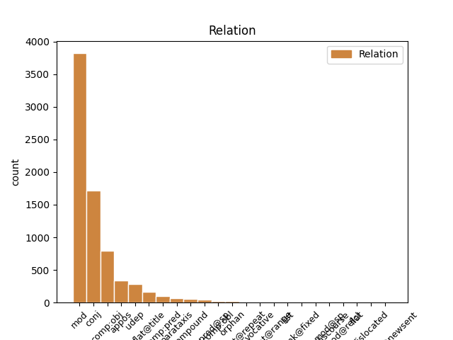
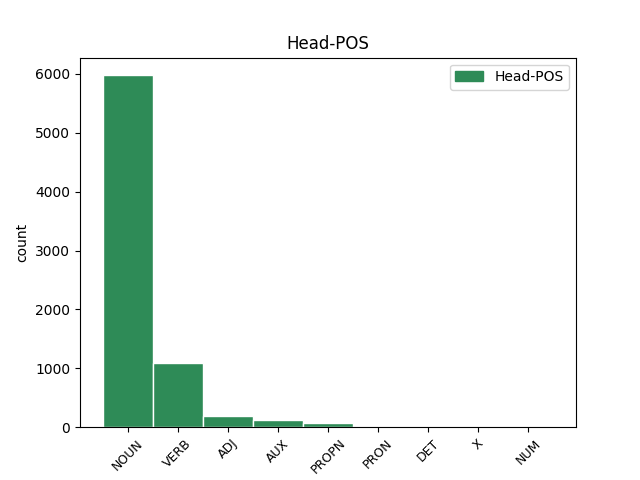
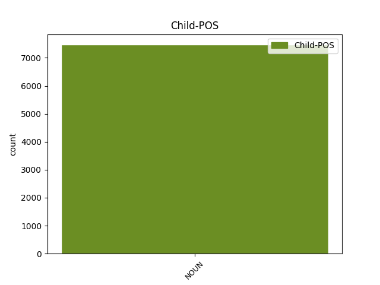

Distribution of features within this leaf



Agreement Rules sorted by frequency.
- When the dependent token is the modifer(mod) of the head token, and the head token is NOUN and the dependent token is NOUN.
1 Під _ _ _ _ 0 _ _ _
2 час _ _ _ _ 0 _ _ _
3 показу _ _ _ _ 0 _ _ _
4 у _ _ _ _ 0 _ _ _
5 США _ _ _ _ 0 _ _ _
6 , _ _ _ _ 0 _ _ _
7 що _ _ _ _ 0 _ _ _
8 розпочався _ _ _ _ 0 _ _ _
9 18 _ _ _ _ 0 _ _ _
10 вересня вересень NOUN Ncmsgn Animacy=Inan|Case=Gen|Gender=Masc|Number=Sing 0 _ _ _
11 2015 _ _ _ _ 0 _ _ _
12 року рік NOUN Ncmsgn Animacy=Inan|Case=Gen|Gender=Masc|Number=Sing 10 mod _ Id=39qx|LTranslit=rik|SpaceAfter=No|Translit=roku
13 , _ _ _ _ 0 _ _ _
14 протягом _ _ _ _ 0 _ _ _
15 першого _ _ _ _ 0 _ _ _
16 тижня _ _ _ _ 0 _ _ _
17 фільм _ _ _ _ 0 _ _ _
18 був _ _ _ _ 0 _ _ _
19 показаний _ _ _ _ 0 _ _ _
20 у _ _ _ _ 0 _ _ _
21 545 _ _ _ _ 0 _ _ _
22 кінотеатрах _ _ _ _ 0 _ _ _
23 і _ _ _ _ 0 _ _ _
24 зібрав _ _ _ _ 0 _ _ _
25 7 222 035 _ _ _ _ 0 _ _ _
26 $ _ _ _ _ 0 _ _ _
27 , _ _ _ _ 0 _ _ _
28 що _ _ _ _ 0 _ _ _
29 на _ _ _ _ 0 _ _ _
30 той _ _ _ _ 0 _ _ _
31 час _ _ _ _ 0 _ _ _
32 дозволило _ _ _ _ 0 _ _ _
33 йому _ _ _ _ 0 _ _ _
34 зайняти _ _ _ _ 0 _ _ _
35 5 _ _ _ _ 0 _ _ _
36 місце _ _ _ _ 0 _ _ _
37 серед _ _ _ _ 0 _ _ _
38 усіх _ _ _ _ 0 _ _ _
39 прем'єр _ _ _ _ 0 _ _ _
40 . _ _ _ _ 0 _ _ _
1 У _ _ _ _ 0 _ _ _
2 1-му _ _ _ _ 0 _ _ _
3 кварталі _ _ _ _ 0 _ _ _
4 2015 _ _ _ _ 0 _ _ _
5 р _ _ _ _ 0 _ _ _
6 . _ _ _ _ 0 _ _ _
7 підприємством _ _ _ _ 0 _ _ _
8 сплачено _ _ _ _ 0 _ _ _
9 понад _ _ _ _ 0 _ _ _
10 3 _ _ _ _ 0 _ _ _
11 млрд _ _ _ _ 0 _ _ _
12 . _ _ _ _ 0 _ _ _
13 ₴ _ _ _ _ 0 _ _ _
14 податків податок NOUN Ncmpgn Animacy=Inan|Case=Gen|Gender=Masc|Number=Plur 0 _ _ _
15 і _ _ _ _ 0 _ _ _
16 зборів збір NOUN Ncmpgn Animacy=Inan|Case=Gen|Gender=Masc|Number=Plur 14 conj _ Id=39ka|LTranslit=zbir|SpaceAfter=No|Translit=zboriv
17 . _ _ _ _ 0 _ _ _
1 Під _ _ _ _ 0 _ _ _
2 час _ _ _ _ 0 _ _ _
3 показу _ _ _ _ 0 _ _ _
4 у _ _ _ _ 0 _ _ _
5 США _ _ _ _ 0 _ _ _
6 , _ _ _ _ 0 _ _ _
7 що _ _ _ _ 0 _ _ _
8 розпочався _ _ _ _ 0 _ _ _
9 18 _ _ _ _ 0 _ _ _
10 вересня _ _ _ _ 0 _ _ _
11 2015 _ _ _ _ 0 _ _ _
12 року _ _ _ _ 0 _ _ _
13 , _ _ _ _ 0 _ _ _
14 протягом _ _ _ _ 0 _ _ _
15 першого _ _ _ _ 0 _ _ _
16 тижня _ _ _ _ 0 _ _ _
17 фільм _ _ _ _ 0 _ _ _
18 був _ _ _ _ 0 _ _ _
19 показаний _ _ _ _ 0 _ _ _
20 у _ _ _ _ 0 _ _ _
21 545 _ _ _ _ 0 _ _ _
22 кінотеатрах _ _ _ _ 0 _ _ _
23 і _ _ _ _ 0 _ _ _
24 зібрав зібрати VERB Vmeis-sm Aspect=Perf|Gender=Masc|Mood=Ind|Number=Sing|Tense=Past|VerbForm=Fin 0 _ _ _
25 7 222 035 _ _ _ _ 0 _ _ _
26 $ $ NOUN Ncmpgn Animacy=Inan|Case=Gen|Gender=Masc|Number=Plur|Uninflect=Yes 24 comp:obj _ Id=39rb|LTranslit=$|SpaceAfter=No|Translit=$
27 , _ _ _ _ 0 _ _ _
28 що _ _ _ _ 0 _ _ _
29 на _ _ _ _ 0 _ _ _
30 той _ _ _ _ 0 _ _ _
31 час _ _ _ _ 0 _ _ _
32 дозволило _ _ _ _ 0 _ _ _
33 йому _ _ _ _ 0 _ _ _
34 зайняти _ _ _ _ 0 _ _ _
35 5 _ _ _ _ 0 _ _ _
36 місце _ _ _ _ 0 _ _ _
37 серед _ _ _ _ 0 _ _ _
38 усіх _ _ _ _ 0 _ _ _
39 прем'єр _ _ _ _ 0 _ _ _
40 . _ _ _ _ 0 _ _ _
1 Вона _ _ _ _ 0 _ _ _
2 виявила _ _ _ _ 0 _ _ _
3 готовність _ _ _ _ 0 _ _ _
4 виплатити _ _ _ _ 0 _ _ _
5 за _ _ _ _ 0 _ _ _
6 93%-й _ _ _ _ 0 _ _ _
7 пакет _ _ _ _ 0 _ _ _
8 акцій _ _ _ _ 0 _ _ _
9 « _ _ _ _ 0 _ _ _
10 Криворіжсталі _ _ _ _ 0 _ _ _
11 » _ _ _ _ 0 _ _ _
12 24 _ _ _ _ 0 _ _ _
13 млрд млрд NOUN Y Abbr=Yes|Animacy=Inan|Case=Gen|Gender=Masc|Number=Plur|NumType=Card|Uninflect=Yes 0 _ _ _
14 . _ _ _ _ 0 _ _ _
15 200 _ _ _ _ 0 _ _ _
16 млн _ _ _ _ 0 _ _ _
17 ₴ _ _ _ _ 0 _ _ _
18 . _ _ _ _ 0 _ _ _
19 ( _ _ _ _ 0 _ _ _
20 4 _ _ _ _ 0 _ _ _
21 , _ _ _ _ 0 _ _ _
22 8 _ _ _ _ 0 _ _ _
23 млрд млрд NOUN Y Abbr=Yes|Animacy=Inan|Case=Gen|Gender=Masc|Number=Plur|NumType=Card|Uninflect=Yes 13 appos _ Id=39m2|LTranslit=mlrd|Translit=mlrd
24 доларів _ _ _ _ 0 _ _ _
25 США _ _ _ _ 0 _ _ _
26 ) _ _ _ _ 0 _ _ _
27 , _ _ _ _ 0 _ _ _
28 що _ _ _ _ 0 _ _ _
29 в _ _ _ _ 0 _ _ _
30 2 _ _ _ _ 0 _ _ _
31 , _ _ _ _ 0 _ _ _
32 4 _ _ _ _ 0 _ _ _
33 рази _ _ _ _ 0 _ _ _
34 перевищує _ _ _ _ 0 _ _ _
35 стартову _ _ _ _ 0 _ _ _
36 ціну _ _ _ _ 0 _ _ _
37 і _ _ _ _ 0 _ _ _
38 в _ _ _ _ 0 _ _ _
39 5 _ _ _ _ 0 _ _ _
40 , _ _ _ _ 0 _ _ _
41 7 _ _ _ _ 0 _ _ _
42 рази _ _ _ _ 0 _ _ _
43 — _ _ _ _ 0 _ _ _
44 суму _ _ _ _ 0 _ _ _
45 , _ _ _ _ 0 _ _ _
46 отриману _ _ _ _ 0 _ _ _
47 за _ _ _ _ 0 _ _ _
48 підприємство _ _ _ _ 0 _ _ _
49 2004 _ _ _ _ 0 _ _ _
50 року _ _ _ _ 0 _ _ _
51 . _ _ _ _ 0 _ _ _
1 Показ _ _ _ _ 0 _ _ _
2 в _ _ _ _ 0 _ _ _
3 Україні _ _ _ _ 0 _ _ _
4 тривав тривати VERB Vmpis-sm Aspect=Imp|Gender=Masc|Mood=Ind|Number=Sing|Tense=Past|VerbForm=Fin 0 _ _ _
5 7 _ _ _ _ 0 _ _ _
6 тижнів тиждень NOUN Ncmpgn Animacy=Inan|Case=Gen|Gender=Masc|Number=Plur 4 udep _ Id=39pv|LTranslit=tyždeń|Translit=tyžniv
7 і _ _ _ _ 0 _ _ _
8 завершився _ _ _ _ 0 _ _ _
9 8 _ _ _ _ 0 _ _ _
10 листопада _ _ _ _ 0 _ _ _
11 2015 _ _ _ _ 0 _ _ _
12 року _ _ _ _ 0 _ _ _
13 , _ _ _ _ 0 _ _ _
14 за _ _ _ _ 0 _ _ _
15 час _ _ _ _ 0 _ _ _
16 прокату _ _ _ _ 0 _ _ _
17 було _ _ _ _ 0 _ _ _
18 продано _ _ _ _ 0 _ _ _
19 442 509 _ _ _ _ 0 _ _ _
20 квитків _ _ _ _ 0 _ _ _
21 та _ _ _ _ 0 _ _ _
22 зібрано _ _ _ _ 0 _ _ _
23 29 037 892 _ _ _ _ 0 _ _ _
24 ₴ _ _ _ _ 0 _ _ _
25 , _ _ _ _ 0 _ _ _
26 або _ _ _ _ 0 _ _ _
27 ж _ _ _ _ 0 _ _ _
28 1,357,145 _ _ _ _ 0 _ _ _
29 $ _ _ _ _ 0 _ _ _
30 . _ _ _ _ 0 _ _ _
1 Моїм _ _ _ _ 0 _ _ _
2 рятівником рятівник NOUN Ncmsiy Animacy=Anim|Case=Ins|Gender=Masc|Number=Sing 3 comp:pred _ Id=33zj|LTranslit=ŕаtivnyk|Translit=ŕаtivnykom
3 був бути AUX Vapis-sm Aspect=Imp|Gender=Masc|Mood=Ind|Number=Sing|Tense=Past|VerbForm=Fin 0 _ _ _
4 дід _ _ _ _ 0 _ _ _
5 із _ _ _ _ 0 _ _ _
6 перегаром _ _ _ _ 0 _ _ _
7 та _ _ _ _ 0 _ _ _
8 ржавою _ _ _ _ 0 _ _ _
9 монтіровкою _ _ _ _ 0 _ _ _
10 , _ _ _ _ 0 _ _ _
11 у _ _ _ _ 0 _ _ _
12 зачовганому _ _ _ _ 0 _ _ _
13 комбінезоні _ _ _ _ 0 _ _ _
14 . _ _ _ _ 0 _ _ _
1 Так _ _ _ _ 0 _ _ _
2 , _ _ _ _ 0 _ _ _
3 20 _ _ _ _ 0 _ _ _
4 вересня _ _ _ _ 0 _ _ _
5 на _ _ _ _ 0 _ _ _
6 сторінці _ _ _ _ 0 _ _ _
7 директора _ _ _ _ 0 _ _ _
8 Національного _ _ _ _ 0 _ _ _
9 комплексу комплекс NOUN Ncmsgn Animacy=Inan|Case=Gen|Gender=Masc|Number=Sing 0 _ _ _
10 " _ _ _ _ 0 _ _ _
11 Експоцентр експоцентр NOUN Ncmsnn Animacy=Inan|Case=Nom|Gender=Masc|Number=Sing 9 flat@title _ Id=390x|LTranslit=ekspocentr|Translit=Ekspocentr
12 України _ _ _ _ 0 _ _ _
13 " _ _ _ _ 0 _ _ _
14 ( _ _ _ _ 0 _ _ _
15 раніше _ _ _ _ 0 _ _ _
16 – _ _ _ _ 0 _ _ _
17 ВДНГ _ _ _ _ 0 _ _ _
18 ) _ _ _ _ 0 _ _ _
19 у _ _ _ _ 0 _ _ _
20 Facebook _ _ _ _ 0 _ _ _
21 з’явилося _ _ _ _ 0 _ _ _
22 повідомлення _ _ _ _ 0 _ _ _
23 про _ _ _ _ 0 _ _ _
24 те _ _ _ _ 0 _ _ _
25 , _ _ _ _ 0 _ _ _
26 що _ _ _ _ 0 _ _ _
27 дельфінарій _ _ _ _ 0 _ _ _
28 " _ _ _ _ 0 _ _ _
29 НЕМО _ _ _ _ 0 _ _ _
30 " _ _ _ _ 0 _ _ _
31 запропонував _ _ _ _ 0 _ _ _
32 звести _ _ _ _ 0 _ _ _
33 нову _ _ _ _ 0 _ _ _
34 конструкцію _ _ _ _ 0 _ _ _
35 на _ _ _ _ 0 _ _ _
36 території _ _ _ _ 0 _ _ _
37 Виставкового _ _ _ _ 0 _ _ _
38 центру _ _ _ _ 0 _ _ _
39 . _ _ _ _ 0 _ _ _
1 Мр _ _ _ _ 0 _ _ _
2 . _ _ _ _ 0 _ _ _
3 Фред _ _ _ _ 0 _ _ _
4 Кетлінг _ _ _ _ 0 _ _ _
5 поміркував _ _ _ _ 0 _ _ _
6 , _ _ _ _ 0 _ _ _
7 а _ _ _ _ 0 _ _ _
8 потім _ _ _ _ 0 _ _ _
9 нерадо _ _ _ _ 0 _ _ _
10 запропонував _ _ _ _ 0 _ _ _
11 від _ _ _ _ 0 _ _ _
12 себе _ _ _ _ 0 _ _ _
13 одно _ _ _ _ 0 _ _ _
14 веселе _ _ _ _ 0 _ _ _
15 місце _ _ _ _ 0 _ _ _
16 на _ _ _ _ 0 _ _ _
17 Бродвею _ _ _ _ 0 _ _ _
18 з _ _ _ _ 0 _ _ _
19 джез джез NOUN Ncmsnn Animacy=Inan|Case=Nom|Gender=Masc|Number=Sing 21 compound _ Id=33ml|LTranslit=džez|SpaceAfter=No|Translit=džez
20 - _ _ _ _ 0 _ _ _
21 бендом бенд NOUN Ncmsin Animacy=Inan|Case=Ins|Gender=Masc|Number=Sing 0 _ _ _
22 , _ _ _ _ 0 _ _ _
23 неграми _ _ _ _ 0 _ _ _
24 і _ _ _ _ 0 _ _ _
25 зовсім _ _ _ _ 0 _ _ _
26 голісінькими _ _ _ _ 0 _ _ _
27 леді _ _ _ _ 0 _ _ _
28 . _ _ _ _ 0 _ _ _
1 В _ _ _ _ 0 _ _ _
2 селі _ _ _ _ 0 _ _ _
3 Казавчині _ _ _ _ 0 _ _ _
4 , _ _ _ _ 0 _ _ _
5 ще _ _ _ _ 0 _ _ _
6 далі _ _ _ _ 0 _ _ _
7 на _ _ _ _ 0 _ _ _
8 північ _ _ _ _ 0 _ _ _
9 , _ _ _ _ 0 _ _ _
10 на _ _ _ _ 0 _ _ _
11 так _ _ _ _ 0 _ _ _
12 зв _ _ _ _ 0 _ _ _
13 . _ _ _ _ 0 _ _ _
14 скелі _ _ _ _ 0 _ _ _
15 Ржевуського _ _ _ _ 0 _ _ _
16 був _ _ _ _ 0 _ _ _
17 арабський _ _ _ _ 0 _ _ _
18 напис _ _ _ _ 0 _ _ _
19 про _ _ _ _ 0 _ _ _
20 якогось _ _ _ _ 0 _ _ _
21 татарського _ _ _ _ 0 _ _ _
22 баскака _ _ _ _ 0 _ _ _
23 від _ _ _ _ 0 _ _ _
24 XIV _ _ _ _ 0 _ _ _
25 ст _ _ _ _ 0 _ _ _
26 . _ _ _ _ 0 _ _ _
27 — _ _ _ _ 0 _ _ _
28 звістка _ _ _ _ 0 _ _ _
29 ця _ _ _ _ 0 _ _ _
30 йде _ _ _ _ 0 _ _ _
31 від _ _ _ _ 0 _ _ _
32 Марчинського Марчинський PROPN Npmsgy Animacy=Anim|Case=Gen|Gender=Masc|NameType=Sur|Number=Sing 0 _ _ _
33 , _ _ _ _ 0 _ _ _
34 подільського _ _ _ _ 0 _ _ _
35 діяча діяч NOUN Ncmsgy Animacy=Anim|Case=Gen|Gender=Masc|Number=Sing 32 appos _ Id=2vu8|LTranslit=dijač|SpaceAfter=No|Translit=dijača
36 - _ _ _ _ 0 _ _ _
37 краєзнавця _ _ _ _ 0 _ _ _
38 першої _ _ _ _ 0 _ _ _
39 половини _ _ _ _ 0 _ _ _
40 XIX _ _ _ _ 0 _ _ _
41 ст _ _ _ _ 0 _ _ _
42 . _ _ _ _ 0 _ _ _
43 і _ _ _ _ 0 _ _ _
44 лишається _ _ _ _ 0 _ _ _
45 на _ _ _ _ 0 _ _ _
46 його _ _ _ _ 0 _ _ _
47 відповідальності _ _ _ _ 0 _ _ _
48 ; _ _ _ _ 0 _ _ _
49 Є _ _ _ _ 0 _ _ _
50 . _ _ _ _ 0 _ _ _
51 Сіцінському _ _ _ _ 0 _ _ _
52 , _ _ _ _ 0 _ _ _
53 що _ _ _ _ 0 _ _ _
54 складав _ _ _ _ 0 _ _ _
55 археологічну _ _ _ _ 0 _ _ _
56 мапу _ _ _ _ 0 _ _ _
57 Поділля _ _ _ _ 0 _ _ _
58 , _ _ _ _ 0 _ _ _
59 цього _ _ _ _ 0 _ _ _
60 напису _ _ _ _ 0 _ _ _
61 не _ _ _ _ 0 _ _ _
62 вдалося _ _ _ _ 0 _ _ _
63 знайти _ _ _ _ 0 _ _ _
64 . _ _ _ _ 0 _ _ _
1 Благородна благородний ADJ Afpfsns Case=Nom|Degree=Pos|Gender=Fem|Number=Sing 0 _ _ _
2 і _ _ _ _ 0 _ _ _
3 своєю _ _ _ _ 0 _ _ _
4 постаттю постать NOUN Ncfsin Animacy=Inan|Case=Ins|Gender=Fem|Number=Sing 1 udep _ Id=32vu|LTranslit=postať|SpaceAfter=No|Translit=postatťu
5 , _ _ _ _ 0 _ _ _
6 коли _ _ _ _ 0 _ _ _
7 , _ _ _ _ 0 _ _ _
8 струнка _ _ _ _ 0 _ _ _
9 й _ _ _ _ 0 _ _ _
10 ніжна _ _ _ _ 0 _ _ _
11 , _ _ _ _ 0 _ _ _
12 стоїть _ _ _ _ 0 _ _ _
13 вона _ _ _ _ 0 _ _ _
14 серед _ _ _ _ 0 _ _ _
15 кущів _ _ _ _ 0 _ _ _
16 ліщини _ _ _ _ 0 _ _ _
17 або _ _ _ _ 0 _ _ _
18 на _ _ _ _ 0 _ _ _
19 зеленій _ _ _ _ 0 _ _ _
20 квітучо _ _ _ _ 0 _ _ _
21 - _ _ _ _ 0 _ _ _
22 пахучій _ _ _ _ 0 _ _ _
23 галявині _ _ _ _ 0 _ _ _
24 лісу _ _ _ _ 0 _ _ _
25 нашого _ _ _ _ 0 _ _ _
26 чарівного _ _ _ _ 0 _ _ _
27 чи _ _ _ _ 0 _ _ _
28 коли _ _ _ _ 0 _ _ _
29 , _ _ _ _ 0 _ _ _
30 спустившись _ _ _ _ 0 _ _ _
31 до _ _ _ _ 0 _ _ _
32 Сули _ _ _ _ 0 _ _ _
33 , _ _ _ _ 0 _ _ _
34 до _ _ _ _ 0 _ _ _
35 Росі _ _ _ _ 0 _ _ _
36 , _ _ _ _ 0 _ _ _
37 до _ _ _ _ 0 _ _ _
38 Горині _ _ _ _ 0 _ _ _
39 , _ _ _ _ 0 _ _ _
40 граціозно _ _ _ _ 0 _ _ _
41 нахилившись _ _ _ _ 0 _ _ _
42 , _ _ _ _ 0 _ _ _
43 студену _ _ _ _ 0 _ _ _
44 воду _ _ _ _ 0 _ _ _
45 п'є _ _ _ _ 0 _ _ _
46 . _ _ _ _ 0 _ _ _
1 Наступним _ _ _ _ 0 _ _ _
2 етапом етап NOUN Ncmsin Animacy=Inan|Case=Ins|Gender=Masc|Number=Sing 4 comp:pred@sp _ Id=2qph|LTranslit=etap|Translit=etapom
3 еволюції _ _ _ _ 0 _ _ _
4 став стати VERB Vmeis-sm Aspect=Perf|Gender=Masc|Mood=Ind|Number=Sing|Tense=Past|VerbForm=Fin 0 _ _ _
5 двоскладний _ _ _ _ 0 _ _ _
6 купальний _ _ _ _ 0 _ _ _
7 костюм _ _ _ _ 0 _ _ _
8 : _ _ _ _ 0 _ _ _
9 жакет _ _ _ _ 0 _ _ _
10 та _ _ _ _ 0 _ _ _
11 довгі _ _ _ _ 0 _ _ _
12 панталони _ _ _ _ 0 _ _ _
13 , _ _ _ _ 0 _ _ _
14 що _ _ _ _ 0 _ _ _
15 повністю _ _ _ _ 0 _ _ _
16 закривали _ _ _ _ 0 _ _ _
17 ноги _ _ _ _ 0 _ _ _
18 . _ _ _ _ 0 _ _ _
1 У _ _ _ _ 0 _ _ _
2 нас _ _ _ _ 0 _ _ _
3 Шабунін Шабунін PROPN Npmsny Animacy=Anim|Case=Nom|Gender=Masc|NameType=Sur|Number=Sing 0 _ _ _
4 і _ _ _ _ 0 _ _ _
5 кардинал кардинал NOUN Ncmsny Animacy=Anim|Case=Nom|Gender=Masc|Number=Sing 3 conj _ Id=2pbv|LTranslit=kardynal|Translit=kardynal
6 Любомир _ _ _ _ 0 _ _ _
7 Гузар _ _ _ _ 0 _ _ _
8 , _ _ _ _ 0 _ _ _
9 то _ _ _ _ 0 _ _ _
10 вже _ _ _ _ 0 _ _ _
11 близькі _ _ _ _ 0 _ _ _
12 порівнювані _ _ _ _ 0 _ _ _
13 величини _ _ _ _ 0 _ _ _
14 ? _ _ _ _ 0 _ _ _
1 Залюбки _ _ _ _ 0 _ _ _
2 цитований _ _ _ _ 0 _ _ _
3 в _ _ _ _ 0 _ _ _
4 історичній _ _ _ _ 0 _ _ _
5 літературі _ _ _ _ 0 _ _ _
6 мандрівник мандрівник NOUN Ncmsny Animacy=Anim|Case=Nom|Gender=Masc|Number=Sing 0 _ _ _
7 ( _ _ _ _ 0 _ _ _
8 20-ті _ _ _ _ 0 _ _ _
9 роки рік NOUN Ncmpnn Animacy=Inan|Case=Nom|Gender=Masc|Number=Plur 6 parataxis _ Id=2vp7|LTranslit=rik|Translit=roky
10 XV _ _ _ _ 0 _ _ _
11 ст _ _ _ _ 0 _ _ _
12 . _ _ _ _ 0 _ _ _
13 ) _ _ _ _ 0 _ _ _
14 Ланоа _ _ _ _ 0 _ _ _
15 докладно _ _ _ _ 0 _ _ _
16 оповідає _ _ _ _ 0 _ _ _
17 про _ _ _ _ 0 _ _ _
18 татарську _ _ _ _ 0 _ _ _
19 людність _ _ _ _ 0 _ _ _
20 району _ _ _ _ 0 _ _ _
21 поміж _ _ _ _ 0 _ _ _
22 Дністром _ _ _ _ 0 _ _ _
23 та _ _ _ _ 0 _ _ _
24 Дніпром _ _ _ _ 0 _ _ _
25 , _ _ _ _ 0 _ _ _
26 що _ _ _ _ 0 _ _ _
27 перебувала _ _ _ _ 0 _ _ _
28 тут _ _ _ _ 0 _ _ _
29 під _ _ _ _ 0 _ _ _
30 зверхністю _ _ _ _ 0 _ _ _
31 Витовта _ _ _ _ 0 _ _ _
32 , _ _ _ _ 0 _ _ _
33 але _ _ _ _ 0 _ _ _
34 із _ _ _ _ 0 _ _ _
35 своїми _ _ _ _ 0 _ _ _
36 тубільними _ _ _ _ 0 _ _ _
37 князьками _ _ _ _ 0 _ _ _
38 . _ _ _ _ 0 _ _ _
1 Ти _ _ _ _ 0 _ _ _
2 справедливо _ _ _ _ 0 _ _ _
3 скажеш _ _ _ _ 0 _ _ _
4 на _ _ _ _ 0 _ _ _
5 це _ _ _ _ 0 _ _ _
6 : _ _ _ _ 0 _ _ _
7 одна _ _ _ _ 0 _ _ _
8 ластівка _ _ _ _ 0 _ _ _
9 ще _ _ _ _ 0 _ _ _
10 не _ _ _ _ 0 _ _ _
11 робить _ _ _ _ 0 _ _ _
12 весни _ _ _ _ 0 _ _ _
13 ; _ _ _ _ 0 _ _ _
14 але _ _ _ _ 0 _ _ _
15 ж _ _ _ _ 0 _ _ _
16 з _ _ _ _ 0 _ _ _
17 свого _ _ _ _ 0 _ _ _
18 боку _ _ _ _ 0 _ _ _
19 ми _ _ _ _ 0 _ _ _
20 теж _ _ _ _ 0 _ _ _
21 справедливо _ _ _ _ 0 _ _ _
22 відзначимо _ _ _ _ 0 _ _ _
23 , _ _ _ _ 0 _ _ _
24 що _ _ _ _ 0 _ _ _
25 : _ _ _ _ 0 _ _ _
26 хіба _ _ _ _ 0 _ _ _
27 це _ _ _ _ 0 _ _ _
28 не _ _ _ _ 0 _ _ _
29 ти _ _ _ _ 0 _ _ _
30 , _ _ _ _ 0 _ _ _
31 друже _ _ _ _ 0 _ _ _
32 , _ _ _ _ 0 _ _ _
33 з _ _ _ _ 0 _ _ _
34 таким _ _ _ _ 0 _ _ _
35 захопленням _ _ _ _ 0 _ _ _
36 біг _ _ _ _ 0 _ _ _
37 до _ _ _ _ 0 _ _ _
38 театру _ _ _ _ 0 _ _ _
39 , _ _ _ _ 0 _ _ _
40 де _ _ _ _ 0 _ _ _
41 йдуть _ _ _ _ 0 _ _ _
42 — _ _ _ _ 0 _ _ _
43 " _ _ _ _ 0 _ _ _
44 97 _ _ _ _ 0 _ _ _
45 " _ _ _ _ 0 _ _ _
46 , _ _ _ _ 0 _ _ _
47 " _ _ _ _ 0 _ _ _
48 Любов _ _ _ _ 0 _ _ _
49 і _ _ _ _ 0 _ _ _
50 дим _ _ _ _ 0 _ _ _
51 " _ _ _ _ 0 _ _ _
52 , _ _ _ _ 0 _ _ _
53 " _ _ _ _ 0 _ _ _
54 Яблуневий _ _ _ _ 0 _ _ _
55 полон _ _ _ _ 0 _ _ _
56 " _ _ _ _ 0 _ _ _
57 , _ _ _ _ 0 _ _ _
58 " _ _ _ _ 0 _ _ _
59 Комуна _ _ _ _ 0 _ _ _
60 в _ _ _ _ 0 _ _ _
61 степах _ _ _ _ 0 _ _ _
62 " _ _ _ _ 0 _ _ _
63 — _ _ _ _ 0 _ _ _
64 одним _ _ _ _ 0 _ _ _
65 словом _ _ _ _ 0 _ _ _
66 , _ _ _ _ 0 _ _ _
67 хіба _ _ _ _ 0 _ _ _
68 своїми _ _ _ _ 0 _ _ _
69 оплесками _ _ _ _ 0 _ _ _
70 ти _ _ _ _ 0 _ _ _
71 не _ _ _ _ 0 _ _ _
72 вітаєш _ _ _ _ 0 _ _ _
73 т т. NOUN Y Abbr=Yes|Animacy=Anim|Case=Acc|Gender=Masc|Number=Sing|Uninflect=Yes 0 _ _ _
74 . _ _ _ _ 0 _ _ _
75 т т. NOUN Y Abbr=Yes|Animacy=Anim|Case=Acc|Gender=Masc|Number=Sing|Uninflect=Yes 73 flat@repeat _ Id=2veb|LTranslit=t.|SpaceAfter=No|Translit=t
76 . _ _ _ _ 0 _ _ _
77 М _ _ _ _ 0 _ _ _
78 . _ _ _ _ 0 _ _ _
79 Куліша _ _ _ _ 0 _ _ _
80 і _ _ _ _ 0 _ _ _
81 І _ _ _ _ 0 _ _ _
82 . _ _ _ _ 0 _ _ _
83 Дніпровського _ _ _ _ 0 _ _ _
84 , _ _ _ _ 0 _ _ _
85 що _ _ _ _ 0 _ _ _
86 є _ _ _ _ 0 _ _ _
87 членами _ _ _ _ 0 _ _ _
88 Вапліте _ _ _ _ 0 _ _ _
89 ? _ _ _ _ 0 _ _ _
1 Мр _ _ _ _ 0 _ _ _
2 . _ _ _ _ 0 _ _ _
3 Морріс _ _ _ _ 0 _ _ _
4 — _ _ _ _ 0 _ _ _
5 № _ _ _ _ 0 _ _ _
6 847 _ _ _ _ 0 _ _ _
7 , _ _ _ _ 0 _ _ _
8 а _ _ _ _ 0 _ _ _
9 мр мр. NOUN Y Abbr=Yes|Animacy=Anim|Case=Nom|Gender=Masc|Number=Sing|Uninflect=Yes 0 _ _ _
10 . _ _ _ _ 0 _ _ _
11 Кетлінг _ _ _ _ 0 _ _ _
12 — _ _ _ _ 0 _ _ _
13 № № NOUN Ncmsan Animacy=Inan|Case=Acc|Gender=Masc|Number=Sing|Uninflect=Yes 9 orphan _ Id=33qr|LTranslit=№|Translit=№
14 848 _ _ _ _ 0 _ _ _
15 . _ _ _ _ 0 _ _ _
1 Потім _ _ _ _ 0 _ _ _
2 мр _ _ _ _ 0 _ _ _
3 . _ _ _ _ 0 _ _ _
4 Морріс _ _ _ _ 0 _ _ _
5 крикнув крикнути VERB Vmeis-sm Aspect=Perf|Gender=Masc|Mood=Ind|Number=Sing|Tense=Past|VerbForm=Fin 0 _ _ _
6 до _ _ _ _ 0 _ _ _
7 вуха _ _ _ _ 0 _ _ _
8 мр мр. NOUN Y Abbr=Yes|Animacy=Anim|Case=Dat|Gender=Masc|Number=Sing|Uninflect=Yes 5 comp:obl _ Id=33gw|LTranslit=mr.|SpaceAfter=No|Translit=mr
9 . _ _ _ _ 0 _ _ _
10 Кетлінгові _ _ _ _ 0 _ _ _
11 , _ _ _ _ 0 _ _ _
12 що _ _ _ _ 0 _ _ _
13 сьогодні _ _ _ _ 0 _ _ _
14 , _ _ _ _ 0 _ _ _
15 вночі _ _ _ _ 0 _ _ _
16 , _ _ _ _ 0 _ _ _
17 мабуть _ _ _ _ 0 _ _ _
18 , _ _ _ _ 0 _ _ _
19 схоче _ _ _ _ 0 _ _ _
20 падати _ _ _ _ 0 _ _ _
21 дощ _ _ _ _ 0 _ _ _
22 , _ _ _ _ 0 _ _ _
23 на _ _ _ _ 0 _ _ _
24 що _ _ _ _ 0 _ _ _
25 мр _ _ _ _ 0 _ _ _
26 . _ _ _ _ 0 _ _ _
27 Кетлінг _ _ _ _ 0 _ _ _
28 , _ _ _ _ 0 _ _ _
29 позіхнувши _ _ _ _ 0 _ _ _
30 , _ _ _ _ 0 _ _ _
31 відповів _ _ _ _ 0 _ _ _
32 , _ _ _ _ 0 _ _ _
33 що _ _ _ _ 0 _ _ _
34 він _ _ _ _ 0 _ _ _
35 вчора _ _ _ _ 0 _ _ _
36 програв _ _ _ _ 0 _ _ _
37 на _ _ _ _ 0 _ _ _
38 Уолл _ _ _ _ 0 _ _ _
39 - _ _ _ _ 0 _ _ _
40 стріті _ _ _ _ 0 _ _ _
41 тисячу _ _ _ _ 0 _ _ _
42 п'ятсот _ _ _ _ 0 _ _ _
43 доларів _ _ _ _ 0 _ _ _
44 . _ _ _ _ 0 _ _ _
1 Цю _ _ _ _ 0 _ _ _
2 працю _ _ _ _ 0 _ _ _
3 написав написати VERB Vmeis-sm Aspect=Perf|Gender=Masc|Mood=Ind|Number=Sing|Tense=Past|VerbForm=Fin 0 _ _ _
4 д-р _ _ _ _ 0 _ _ _
5 Олег _ _ _ _ 0 _ _ _
6 Кандиба _ _ _ _ 0 _ _ _
7 в _ _ _ _ 0 _ _ _
8 1935 _ _ _ _ 0 _ _ _
9 р _ _ _ _ 0 _ _ _
10 . _ _ _ _ 0 _ _ _
11 декілька _ _ _ _ 0 _ _ _
12 місяців _ _ _ _ 0 _ _ _
13 після _ _ _ _ 0 _ _ _
14 того _ _ _ _ 0 _ _ _
15 , _ _ _ _ 0 _ _ _
16 як _ _ _ _ 0 _ _ _
17 він _ _ _ _ 0 _ _ _
18 брав _ _ _ _ 0 _ _ _
19 участь _ _ _ _ 0 _ _ _
20 у _ _ _ _ 0 _ _ _
21 розкопках _ _ _ _ 0 _ _ _
22 культури _ _ _ _ 0 _ _ _
23 кам’яної _ _ _ _ 0 _ _ _
24 доби _ _ _ _ 0 _ _ _
25 в _ _ _ _ 0 _ _ _
26 Старчево _ _ _ _ 0 _ _ _
27 та _ _ _ _ 0 _ _ _
28 їздив _ _ _ _ 0 _ _ _
29 і _ _ _ _ 0 _ _ _
30 досліджував _ _ _ _ 0 _ _ _
31 подібні _ _ _ _ 0 _ _ _
32 рештки _ _ _ _ 0 _ _ _
33 інших _ _ _ _ 0 _ _ _
34 культур _ _ _ _ 0 _ _ _
35 у _ _ _ _ 0 _ _ _
36 музеях _ _ _ _ 0 _ _ _
37 Румунії _ _ _ _ 0 _ _ _
38 , _ _ _ _ 0 _ _ _
39 Мадярщини _ _ _ _ 0 _ _ _
40 , _ _ _ _ 0 _ _ _
41 Югославії _ _ _ _ 0 _ _ _
42 та _ _ _ _ 0 _ _ _
43 Австрії _ _ _ _ 0 _ _ _
44 ( _ _ _ _ 0 _ _ _
45 1934 _ _ _ _ 0 _ _ _
46 р р. NOUN Y Abbr=Yes|Animacy=Inan|Case=Nom|Gender=Masc|Number=Sing|Uninflect=Yes 3 parataxis _ Id=2uq8|LTranslit=r.|SpaceAfter=No|Translit=r
47 . _ _ _ _ 0 _ _ _
48 ) _ _ _ _ 0 _ _ _
49 . _ _ _ _ 0 _ _ _
1 До _ _ _ _ 0 _ _ _
2 того _ _ _ _ 0 _ _ _
3 ж _ _ _ _ 0 _ _ _
4 , _ _ _ _ 0 _ _ _
5 за _ _ _ _ 0 _ _ _
6 висновками _ _ _ _ 0 _ _ _
7 наших _ _ _ _ 0 _ _ _
8 партнерів _ _ _ _ 0 _ _ _
9 - _ _ _ _ 0 _ _ _
10 хіміків _ _ _ _ 0 _ _ _
11 із _ _ _ _ 0 _ _ _
12 Національного _ _ _ _ 0 _ _ _
13 науково _ _ _ _ 0 _ _ _
14 - _ _ _ _ 0 _ _ _
15 дослідного _ _ _ _ 0 _ _ _
16 реставраційного _ _ _ _ 0 _ _ _
17 центру _ _ _ _ 0 _ _ _
18 України _ _ _ _ 0 _ _ _
19 та _ _ _ _ 0 _ _ _
20 бюро _ _ _ _ 0 _ _ _
21 технічної _ _ _ _ 0 _ _ _
22 експертизи _ _ _ _ 0 _ _ _
23 « _ _ _ _ 0 _ _ _
24 Артлаб _ _ _ _ 0 _ _ _
25 » _ _ _ _ 0 _ _ _
26 , _ _ _ _ 0 _ _ _
27 пігменти _ _ _ _ 0 _ _ _
28 , _ _ _ _ 0 _ _ _
29 застосовані _ _ _ _ 0 _ _ _
30 у _ _ _ _ 0 _ _ _
31 фарбах _ _ _ _ 0 _ _ _
32 , _ _ _ _ 0 _ _ _
33 на _ _ _ _ 0 _ _ _
34 всіх _ _ _ _ 0 _ _ _
35 трьох _ _ _ _ 0 _ _ _
36 частинах _ _ _ _ 0 _ _ _
37 « _ _ _ _ 0 _ _ _
38 Спокуси _ _ _ _ 0 _ _ _
39 св _ _ _ _ 0 _ _ _
40 . _ _ _ _ 0 _ _ _
41 Антонія _ _ _ _ 0 _ _ _
42 » _ _ _ _ 0 _ _ _
43 виявилися _ _ _ _ 0 _ _ _
44 автентичними _ _ _ _ 0 _ _ _
45 : _ _ _ _ 0 _ _ _
46 кістяна _ _ _ _ 0 _ _ _
47 чорна _ _ _ _ 0 _ _ _
48 , _ _ _ _ 0 _ _ _
49 азурит _ _ _ _ 0 _ _ _
50 , _ _ _ _ 0 _ _ _
51 натуральний _ _ _ _ 0 _ _ _
52 ультрамарин _ _ _ _ 0 _ _ _
53 , _ _ _ _ 0 _ _ _
54 малахіт _ _ _ _ 0 _ _ _
55 і _ _ _ _ 0 _ _ _
56 кіновар _ _ _ _ 0 _ _ _
57 — _ _ _ _ 0 _ _ _
58 той _ _ _ _ 0 _ _ _
59 самий _ _ _ _ 0 _ _ _
60 обмежений _ _ _ _ 0 _ _ _
61 репертуар _ _ _ _ 0 _ _ _
62 , _ _ _ _ 0 _ _ _
63 що _ _ _ _ 0 _ _ _
64 був _ _ _ _ 0 _ _ _
65 доступний доступний ADJ Afpmsnf Case=Nom|Degree=Pos|Gender=Masc|Number=Sing 0 _ _ _
66 живописцям живописець NOUN Ncmpdy Animacy=Anim|Case=Dat|Gender=Masc|Number=Plur 65 comp:obj _ Id=2818|LTranslit=žyvopyseć|Translit=žyvopysćаm
67 XV _ _ _ _ 0 _ _ _
68 – _ _ _ _ 0 _ _ _
69 XVI _ _ _ _ 0 _ _ _
70 століття _ _ _ _ 0 _ _ _
71 , _ _ _ _ 0 _ _ _
72 зокрема _ _ _ _ 0 _ _ _
73 Ієронімусові _ _ _ _ 0 _ _ _
74 Босху _ _ _ _ 0 _ _ _
75 та _ _ _ _ 0 _ _ _
76 його _ _ _ _ 0 _ _ _
77 помічникам _ _ _ _ 0 _ _ _
78 . _ _ _ _ 0 _ _ _
1 Найбільші _ _ _ _ 0 _ _ _
2 гонорари _ _ _ _ 0 _ _ _
3 вона _ _ _ _ 0 _ _ _
4 отримала _ _ _ _ 0 _ _ _
5 за _ _ _ _ 0 _ _ _
6 фільми _ _ _ _ 0 _ _ _
7 « _ _ _ _ 0 _ _ _
8 Розлучення _ _ _ _ 0 _ _ _
9 по-американськи _ _ _ _ 0 _ _ _
10 » _ _ _ _ 0 _ _ _
11 ( _ _ _ _ 0 _ _ _
12 2006 _ _ _ _ 0 _ _ _
13 , _ _ _ _ 0 _ _ _
14 $ _ _ _ _ 0 _ _ _
15 8,000,000 _ _ _ _ 0 _ _ _
16 ) _ _ _ _ 0 _ _ _
17 , _ _ _ _ 0 _ _ _
18 « _ _ _ _ 0 _ _ _
19 Ходять _ _ _ _ 0 _ _ _
20 чутки _ _ _ _ 0 _ _ _
21 » _ _ _ _ 0 _ _ _
22 ( _ _ _ _ 0 _ _ _
23 2005 _ _ _ _ 0 _ _ _
24 , _ _ _ _ 0 _ _ _
25 $ _ _ _ _ 0 _ _ _
26 8,000,000 _ _ _ _ 0 _ _ _
27 ) _ _ _ _ 0 _ _ _
28 , _ _ _ _ 0 _ _ _
29 « _ _ _ _ 0 _ _ _
30 А _ _ _ _ 0 _ _ _
31 ось _ _ _ _ 0 _ _ _
32 і _ _ _ _ 0 _ _ _
33 Поллі _ _ _ _ 0 _ _ _
34 ! _ _ _ _ 0 _ _ _
35 » _ _ _ _ 0 _ _ _
36 ( _ _ _ _ 0 _ _ _
37 2004 _ _ _ _ 0 _ _ _
38 , _ _ _ _ 0 _ _ _
39 $ _ _ _ _ 0 _ _ _
40 5,000,000 _ _ _ _ 0 _ _ _
41 ) _ _ _ _ 0 _ _ _
42 , _ _ _ _ 0 _ _ _
43 « _ _ _ _ 0 _ _ _
44 Рок _ _ _ _ 0 _ _ _
45 - _ _ _ _ 0 _ _ _
46 зірка _ _ _ _ 0 _ _ _
47 » _ _ _ _ 0 _ _ _
48 ( _ _ _ _ 0 _ _ _
49 2001 _ _ _ _ 0 _ _ _
50 , _ _ _ _ 0 _ _ _
51 $ _ _ _ _ 0 _ _ _
52 3,000,000 _ _ _ _ 0 _ _ _
53 ) _ _ _ _ 0 _ _ _
54 і _ _ _ _ 0 _ _ _
55 « _ _ _ _ 0 _ _ _
56 Портрет _ _ _ _ 0 _ _ _
57 досконалості _ _ _ _ 0 _ _ _
58 » _ _ _ _ 0 _ _ _
59 ( _ _ _ _ 0 _ _ _
60 1997 1997 ADJ Mlomsn Case=Nom|Gender=Masc|Number=Sing|NumType=Ord|Uninflect=Yes 0 _ _ _
61 , _ _ _ _ 0 _ _ _
62 $ $ NOUN Ncmpgn Animacy=Inan|Case=Gen|Gender=Masc|Number=Plur|Uninflect=Yes 60 parataxis _ Id=2a0d|LTranslit=$|Translit=$
63 2,000,000 _ _ _ _ 0 _ _ _
64 ) _ _ _ _ 0 _ _ _
65 . _ _ _ _ 0 _ _ _
1 фантазія _ _ _ _ 0 _ _ _
2 рісує _ _ _ _ 0 _ _ _
3 трав*яний _ _ _ _ 0 _ _ _
4 чи _ _ _ _ 0 _ _ _
5 листяний листяний ADJ Ao-msafn Animacy=Inan|Case=Acc|Gender=Masc|Number=Sing 0 _ _ _
6 , _ _ _ _ 0 _ _ _
7 екопродукт екопродукт NOUN Ncmsan Animacy=Inan|Case=Acc|Gender=Masc|Number=Sing 5 conj _ Id=2pax|LTranslit=ekoprodukt|Translit=ekoprodukt
8 лісу _ _ _ _ 0 _ _ _
9 , _ _ _ _ 0 _ _ _
10 де _ _ _ _ 0 _ _ _
11 в _ _ _ _ 0 _ _ _
12 кожного _ _ _ _ 0 _ _ _
13 своя _ _ _ _ 0 _ _ _
14 тотемна _ _ _ _ 0 _ _ _
15 рослина _ _ _ _ 0 _ _ _
16 щасливих _ _ _ _ 0 _ _ _
17 первісних _ _ _ _ 0 _ _ _
18 часів _ _ _ _ 0 _ _ _
19 , _ _ _ _ 0 _ _ _
20 коли _ _ _ _ 0 _ _ _
21 не _ _ _ _ 0 _ _ _
22 було _ _ _ _ 0 _ _ _
23 кордонів _ _ _ _ 0 _ _ _
24 і _ _ _ _ 0 _ _ _
25 бюрократії _ _ _ _ 0 _ _ _
26 . _ _ _ _ 0 _ _ _
1 " _ _ _ _ 0 _ _ _
2 Він _ _ _ _ 0 _ _ _
3 створив _ _ _ _ 0 _ _ _
4 там _ _ _ _ 0 _ _ _
5 таку _ _ _ _ 0 _ _ _
6 атмосферу _ _ _ _ 0 _ _ _
7 , _ _ _ _ 0 _ _ _
8 що _ _ _ _ 0 _ _ _
9 , _ _ _ _ 0 _ _ _
10 крім _ _ _ _ 0 _ _ _
11 захоплення _ _ _ _ 0 _ _ _
12 роботою _ _ _ _ 0 _ _ _
13 , _ _ _ _ 0 _ _ _
14 все _ _ _ _ 0 _ _ _
15 інше інше PRON Pi--nnsna Animacy=Inan|Case=Nom|Gender=Neut|Number=Sing|PronType=Ind 0 _ _ _
16 – _ _ _ _ 0 _ _ _
17 і _ _ _ _ 0 _ _ _
18 наше _ _ _ _ 0 _ _ _
19 особисте _ _ _ _ 0 _ _ _
20 життя життя NOUN Ncnsnn Animacy=Inan|Case=Nom|Gender=Neut|Number=Sing 15 appos _ Id=212j|LTranslit=žytťа|SpaceAfter=No|Translit=žytťа
21 , _ _ _ _ 0 _ _ _
22 і _ _ _ _ 0 _ _ _
23 наша _ _ _ _ 0 _ _ _
24 побутова _ _ _ _ 0 _ _ _
25 метушня _ _ _ _ 0 _ _ _
26 – _ _ _ _ 0 _ _ _
27 було _ _ _ _ 0 _ _ _
28 тільки _ _ _ _ 0 _ _ _
29 паливом _ _ _ _ 0 _ _ _
30 , _ _ _ _ 0 _ _ _
31 яке _ _ _ _ 0 _ _ _
32 , _ _ _ _ 0 _ _ _
33 згоряючи _ _ _ _ 0 _ _ _
34 , _ _ _ _ 0 _ _ _
35 перетворювалось _ _ _ _ 0 _ _ _
36 на _ _ _ _ 0 _ _ _
37 натхненну _ _ _ _ 0 _ _ _
38 працю _ _ _ _ 0 _ _ _
39 , _ _ _ _ 0 _ _ _
40 – _ _ _ _ 0 _ _ _
41 згадує _ _ _ _ 0 _ _ _
42 Євгенія _ _ _ _ 0 _ _ _
43 Стрєлкова _ _ _ _ 0 _ _ _
44 , _ _ _ _ 0 _ _ _
45 яка _ _ _ _ 0 _ _ _
46 займалася _ _ _ _ 0 _ _ _
47 в _ _ _ _ 0 _ _ _
48 акторській _ _ _ _ 0 _ _ _
49 студії _ _ _ _ 0 _ _ _
50 Курбаса _ _ _ _ 0 _ _ _
51 . _ _ _ _ 0 _ _ _
1 Наприклад _ _ _ _ 0 _ _ _
2 , _ _ _ _ 0 _ _ _
3 вивіз _ _ _ _ 0 _ _ _
4 меду _ _ _ _ 0 _ _ _
5 в _ _ _ _ 0 _ _ _
6 січні січень NOUN Ncmsln Animacy=Inan|Case=Loc|Gender=Masc|Number=Sing 0 _ _ _
7 — _ _ _ _ 0 _ _ _
8 червні червень NOUN Ncmsln Animacy=Inan|Case=Loc|Gender=Masc|Number=Sing 6 flat@range _ Id=2nba|LTranslit=červeń|Translit=červni
9 2017-го _ _ _ _ 0 _ _ _
10 порівняно _ _ _ _ 0 _ _ _
11 з _ _ _ _ 0 _ _ _
12 першим _ _ _ _ 0 _ _ _
13 півріччям _ _ _ _ 0 _ _ _
14 2016-го _ _ _ _ 0 _ _ _
15 зріс _ _ _ _ 0 _ _ _
16 майже _ _ _ _ 0 _ _ _
17 удвічі _ _ _ _ 0 _ _ _
18 — _ _ _ _ 0 _ _ _
19 до _ _ _ _ 0 _ _ _
20 30 _ _ _ _ 0 _ _ _
21 млн _ _ _ _ 0 _ _ _
22 кг _ _ _ _ 0 _ _ _
23 . _ _ _ _ 0 _ _ _
1 При _ _ _ _ 0 _ _ _
2 спробі _ _ _ _ 0 _ _ _
3 перетину _ _ _ _ 0 _ _ _
4 Державного _ _ _ _ 0 _ _ _
5 кордону _ _ _ _ 0 _ _ _
6 на _ _ _ _ 0 _ _ _
7 міжнародному _ _ _ _ 0 _ _ _
8 пункті _ _ _ _ 0 _ _ _
9 пропуску _ _ _ _ 0 _ _ _
10 « _ _ _ _ 0 _ _ _
11 Бачівськ _ _ _ _ 0 _ _ _
12 » _ _ _ _ 0 _ _ _
13 співробітниками співробітник NOUN Ncmpiy Animacy=Anim|Case=Ins|Gender=Masc|Number=Plur 19 udep _ Id=2dvv|LTranslit=spivrobitnyk|Translit=spivrobitnykamy
14 Сумської _ _ _ _ 0 _ _ _
15 митниці _ _ _ _ 0 _ _ _
16 Державної _ _ _ _ 0 _ _ _
17 фіскальної _ _ _ _ 0 _ _ _
18 служби _ _ _ _ 0 _ _ _
19 був бути AUX Vapis-sm Aspect=Imp|Gender=Masc|Mood=Ind|Number=Sing|Tense=Past|VerbForm=Fin 0 _ _ _
20 зупинений _ _ _ _ 0 _ _ _
21 рейсовий _ _ _ _ 0 _ _ _
22 автобус _ _ _ _ 0 _ _ _
23 Одеса _ _ _ _ 0 _ _ _
24 - _ _ _ _ 0 _ _ _
25 Москва _ _ _ _ 0 _ _ _
26 . _ _ _ _ 0 _ _ _
1 Ти _ _ _ _ 0 _ _ _
2 справедливо _ _ _ _ 0 _ _ _
3 скажеш _ _ _ _ 0 _ _ _
4 на _ _ _ _ 0 _ _ _
5 це _ _ _ _ 0 _ _ _
6 : _ _ _ _ 0 _ _ _
7 одна _ _ _ _ 0 _ _ _
8 ластівка _ _ _ _ 0 _ _ _
9 ще _ _ _ _ 0 _ _ _
10 не _ _ _ _ 0 _ _ _
11 робить _ _ _ _ 0 _ _ _
12 весни _ _ _ _ 0 _ _ _
13 ; _ _ _ _ 0 _ _ _
14 але _ _ _ _ 0 _ _ _
15 ж _ _ _ _ 0 _ _ _
16 з _ _ _ _ 0 _ _ _
17 свого _ _ _ _ 0 _ _ _
18 боку _ _ _ _ 0 _ _ _
19 ми _ _ _ _ 0 _ _ _
20 теж _ _ _ _ 0 _ _ _
21 справедливо _ _ _ _ 0 _ _ _
22 відзначимо _ _ _ _ 0 _ _ _
23 , _ _ _ _ 0 _ _ _
24 що _ _ _ _ 0 _ _ _
25 : _ _ _ _ 0 _ _ _
26 хіба _ _ _ _ 0 _ _ _
27 це _ _ _ _ 0 _ _ _
28 не _ _ _ _ 0 _ _ _
29 ти _ _ _ _ 0 _ _ _
30 , _ _ _ _ 0 _ _ _
31 друже друг NOUN Ncmsvy Animacy=Anim|Case=Voc|Gender=Masc|Number=Sing 36 vocative _ Id=2vd3|LTranslit=druh|SpaceAfter=No|Translit=druže
32 , _ _ _ _ 0 _ _ _
33 з _ _ _ _ 0 _ _ _
34 таким _ _ _ _ 0 _ _ _
35 захопленням _ _ _ _ 0 _ _ _
36 біг бігти VERB Vmpis-sm Aspect=Imp|Gender=Masc|Mood=Ind|Number=Sing|Tense=Past|VerbForm=Fin 0 _ _ _
37 до _ _ _ _ 0 _ _ _
38 театру _ _ _ _ 0 _ _ _
39 , _ _ _ _ 0 _ _ _
40 де _ _ _ _ 0 _ _ _
41 йдуть _ _ _ _ 0 _ _ _
42 — _ _ _ _ 0 _ _ _
43 " _ _ _ _ 0 _ _ _
44 97 _ _ _ _ 0 _ _ _
45 " _ _ _ _ 0 _ _ _
46 , _ _ _ _ 0 _ _ _
47 " _ _ _ _ 0 _ _ _
48 Любов _ _ _ _ 0 _ _ _
49 і _ _ _ _ 0 _ _ _
50 дим _ _ _ _ 0 _ _ _
51 " _ _ _ _ 0 _ _ _
52 , _ _ _ _ 0 _ _ _
53 " _ _ _ _ 0 _ _ _
54 Яблуневий _ _ _ _ 0 _ _ _
55 полон _ _ _ _ 0 _ _ _
56 " _ _ _ _ 0 _ _ _
57 , _ _ _ _ 0 _ _ _
58 " _ _ _ _ 0 _ _ _
59 Комуна _ _ _ _ 0 _ _ _
60 в _ _ _ _ 0 _ _ _
61 степах _ _ _ _ 0 _ _ _
62 " _ _ _ _ 0 _ _ _
63 — _ _ _ _ 0 _ _ _
64 одним _ _ _ _ 0 _ _ _
65 словом _ _ _ _ 0 _ _ _
66 , _ _ _ _ 0 _ _ _
67 хіба _ _ _ _ 0 _ _ _
68 своїми _ _ _ _ 0 _ _ _
69 оплесками _ _ _ _ 0 _ _ _
70 ти _ _ _ _ 0 _ _ _
71 не _ _ _ _ 0 _ _ _
72 вітаєш _ _ _ _ 0 _ _ _
73 т _ _ _ _ 0 _ _ _
74 . _ _ _ _ 0 _ _ _
75 т _ _ _ _ 0 _ _ _
76 . _ _ _ _ 0 _ _ _
77 М _ _ _ _ 0 _ _ _
78 . _ _ _ _ 0 _ _ _
79 Куліша _ _ _ _ 0 _ _ _
80 і _ _ _ _ 0 _ _ _
81 І _ _ _ _ 0 _ _ _
82 . _ _ _ _ 0 _ _ _
83 Дніпровського _ _ _ _ 0 _ _ _
84 , _ _ _ _ 0 _ _ _
85 що _ _ _ _ 0 _ _ _
86 є _ _ _ _ 0 _ _ _
87 членами _ _ _ _ 0 _ _ _
88 Вапліте _ _ _ _ 0 _ _ _
89 ? _ _ _ _ 0 _ _ _
1 На _ _ _ _ 0 _ _ _
2 другому _ _ _ _ 0 _ _ _
3 місці _ _ _ _ 0 _ _ _
4 за _ _ _ _ 0 _ _ _
5 популярністю _ _ _ _ 0 _ _ _
6 запитів _ _ _ _ 0 _ _ _
7 розташувалася розташуватися VERB Vmeis-sf Aspect=Perf|Gender=Fem|Mood=Ind|Number=Sing|Tense=Past|VerbForm=Fin 0 _ _ _
8 наукова _ _ _ _ 0 _ _ _
9 фантастика _ _ _ _ 0 _ _ _
10 " _ _ _ _ 0 _ _ _
11 Прибуття _ _ _ _ 0 _ _ _
12 " _ _ _ _ 0 _ _ _
13 , _ _ _ _ 0 _ _ _
14 а _ _ _ _ 0 _ _ _
15 на _ _ _ _ 0 _ _ _
16 третьому _ _ _ _ 0 _ _ _
17 місці _ _ _ _ 0 _ _ _
18 – _ _ _ _ 0 _ _ _
19 режисерська _ _ _ _ 0 _ _ _
20 робота робота NOUN Ncfsnn Animacy=Inan|Case=Nom|Gender=Fem|Number=Sing 7 conj _ Id=1yvz|LTranslit=robota|Translit=robota
21 Мела _ _ _ _ 0 _ _ _
22 Гібсона _ _ _ _ 0 _ _ _
23 , _ _ _ _ 0 _ _ _
24 військова _ _ _ _ 0 _ _ _
25 драма _ _ _ _ 0 _ _ _
26 " _ _ _ _ 0 _ _ _
27 З _ _ _ _ 0 _ _ _
28 міркувань _ _ _ _ 0 _ _ _
29 совісті _ _ _ _ 0 _ _ _
30 " _ _ _ _ 0 _ _ _
31 . _ _ _ _ 0 _ _ _
1 Тут _ _ _ _ 0 _ _ _
2 їздили _ _ _ _ 0 _ _ _
3 цілі _ _ _ _ 0 _ _ _
4 гори _ _ _ _ 0 _ _ _
5 зелені _ _ _ _ 0 _ _ _
6 з _ _ _ _ 0 _ _ _
7 білим _ _ _ _ 0 _ _ _
8 снігом _ _ _ _ 0 _ _ _
9 зверху _ _ _ _ 0 _ _ _
10 , _ _ _ _ 0 _ _ _
11 і _ _ _ _ 0 _ _ _
12 кораблі _ _ _ _ 0 _ _ _
13 , _ _ _ _ 0 _ _ _
14 і _ _ _ _ 0 _ _ _
15 хати _ _ _ _ 0 _ _ _
16 ( _ _ _ _ 0 _ _ _
17 кухня _ _ _ _ 0 _ _ _
18 , _ _ _ _ 0 _ _ _
19 звідки _ _ _ _ 0 _ _ _
20 тарілки _ _ _ _ 0 _ _ _
21 та _ _ _ _ 0 _ _ _
22 городину _ _ _ _ 0 _ _ _
23 кидали _ _ _ _ 0 _ _ _
24 ) _ _ _ _ 0 _ _ _
25 , _ _ _ _ 0 _ _ _
26 і _ _ _ _ 0 _ _ _
27 багато _ _ _ _ 0 _ _ _
28 від _ _ _ _ 0 _ _ _
29 коліс _ _ _ _ 0 _ _ _
30 до _ _ _ _ 0 _ _ _
31 верху _ _ _ _ 0 _ _ _
32 убраних _ _ _ _ 0 _ _ _
33 квітками _ _ _ _ 0 _ _ _
34 ландо _ _ _ _ 0 _ _ _
35 , _ _ _ _ 0 _ _ _
36 а _ _ _ _ 0 _ _ _
37 в _ _ _ _ 0 _ _ _
38 Бордігері _ _ _ _ 0 _ _ _
39 сього _ _ _ _ 0 _ _ _
40 , _ _ _ _ 0 _ _ _
41 певне _ _ _ _ 0 _ _ _
42 , _ _ _ _ 0 _ _ _
43 не _ _ _ _ 0 _ _ _
44 буде _ _ _ _ 0 _ _ _
45 , _ _ _ _ 0 _ _ _
46 бо _ _ _ _ 0 _ _ _
47 тільки _ _ _ _ 0 _ _ _
48 приїжджі _ _ _ _ 0 _ _ _
49 братимуть _ _ _ _ 0 _ _ _
50 участь _ _ _ _ 0 _ _ _
51 , _ _ _ _ 0 _ _ _
52 а _ _ _ _ 0 _ _ _
53 італьянцям італьянець NOUN Ncmpdy Animacy=Anim|Case=Dat|Gender=Masc|Number=Plur 55 comp:obj _ Id=15mz|LTranslit=itaľjaneć|Translit=itaľjanćаm
54 сьогодні _ _ _ _ 0 _ _ _
55 піст піст NOUN Ncmsnn Animacy=Inan|Case=Nom|Gender=Masc|Number=Sing 0 _ _ _
56 ( _ _ _ _ 0 _ _ _
57 mi-carême _ _ _ _ 0 _ _ _
58 уже _ _ _ _ 0 _ _ _
59 пропустили _ _ _ _ 0 _ _ _
60 ) _ _ _ _ 0 _ _ _
61 . _ _ _ _ 0 _ _ _
1 Змініть _ _ _ _ 0 _ _ _
2 у _ _ _ _ 0 _ _ _
3 разі _ _ _ _ 0 _ _ _
4 необхідності _ _ _ _ 0 _ _ _
5 налаштування _ _ _ _ 0 _ _ _
6 браузера _ _ _ _ 0 _ _ _
7 за _ _ _ _ 0 _ _ _
8 зразком _ _ _ _ 0 _ _ _
9 : _ _ _ _ 0 _ _ _
10 - _ _ _ _ 0 _ _ _
11 у _ _ _ _ 0 _ _ _
12 пункті _ _ _ _ 0 _ _ _
13 меню _ _ _ _ 0 _ _ _
14 « _ _ _ _ 0 _ _ _
15 Властивості _ _ _ _ 0 _ _ _
16 » _ _ _ _ 0 _ _ _
17 / _ _ _ _ 0 _ _ _
18 « _ _ _ _ 0 _ _ _
19 Зміст _ _ _ _ 0 _ _ _
20 » _ _ _ _ 0 _ _ _
21 / _ _ _ _ 0 _ _ _
22 « _ _ _ _ 0 _ _ _
23 Автозаповнення _ _ _ _ 0 _ _ _
24 » _ _ _ _ 0 _ _ _
25 відключити _ _ _ _ 0 _ _ _
26 режим _ _ _ _ 0 _ _ _
27 автозаповнення _ _ _ _ 0 _ _ _
28 імен _ _ _ _ 0 _ _ _
29 користувачів _ _ _ _ 0 _ _ _
30 і _ _ _ _ 0 _ _ _
31 паролів _ _ _ _ 0 _ _ _
32 у _ _ _ _ 0 _ _ _
33 формах _ _ _ _ 0 _ _ _
34 ; _ _ _ _ 0 _ _ _
35 - _ _ _ _ 0 _ _ _
36 у _ _ _ _ 0 _ _ _
37 пункті _ _ _ _ 0 _ _ _
38 меню _ _ _ _ 0 _ _ _
39 « _ _ _ _ 0 _ _ _
40 Властивості властивість NOUN Ncfpnn Animacy=Inan|Case=Nom|Gender=Fem|Number=Plur 0 _ _ _
41 » _ _ _ _ 0 _ _ _
42 / _ _ _ _ 0 _ _ _
43 « _ _ _ _ 0 _ _ _
44 Додатково _ _ _ _ 0 _ _ _
45 » _ _ _ _ 0 _ _ _
46 / _ _ _ _ 0 _ _ _
47 « _ _ _ _ 0 _ _ _
48 Безпека безпека NOUN Ncfsnn Animacy=Inan|Case=Nom|Gender=Fem|Number=Sing 40 list _ Id=1tvr|LTranslit=bezpeka|SpaceAfter=No|Translit=Bezpeka
49 » _ _ _ _ 0 _ _ _
50 вибрати _ _ _ _ 0 _ _ _
51 « _ _ _ _ 0 _ _ _
52 Не _ _ _ _ 0 _ _ _
53 зберігати _ _ _ _ 0 _ _ _
54 зашифровані _ _ _ _ 0 _ _ _
55 сторінки _ _ _ _ 0 _ _ _
56 на _ _ _ _ 0 _ _ _
57 диск _ _ _ _ 0 _ _ _
58 » _ _ _ _ 0 _ _ _
59 . _ _ _ _ 0 _ _ _
1 Собаки _ _ _ _ 0 _ _ _
2 , _ _ _ _ 0 _ _ _
3 незалежно _ _ _ _ 0 _ _ _
4 від _ _ _ _ 0 _ _ _
5 породи _ _ _ _ 0 _ _ _
6 , _ _ _ _ 0 _ _ _
7 належності _ _ _ _ 0 _ _ _
8 та _ _ _ _ 0 _ _ _
9 призначення _ _ _ _ 0 _ _ _
10 , _ _ _ _ 0 _ _ _
11 у _ _ _ _ 0 _ _ _
12 тому той DET Pd--n-sla Case=Loc|Gender=Neut|Number=Sing|PronType=Dem 0 _ _ _
13 числі число NOUN Ncnsln Animacy=Inan|Case=Loc|Gender=Neut|Number=Sing 12 unk@fixed _ Id=1in8|LTranslit=čyslo|Translit=čysli
14 й _ _ _ _ 0 _ _ _
15 ті _ _ _ _ 0 _ _ _
16 , _ _ _ _ 0 _ _ _
17 що _ _ _ _ 0 _ _ _
18 мають _ _ _ _ 0 _ _ _
19 нашийники _ _ _ _ 0 _ _ _
20 з _ _ _ _ 0 _ _ _
21 номерними _ _ _ _ 0 _ _ _
22 знаками _ _ _ _ 0 _ _ _
23 і _ _ _ _ 0 _ _ _
24 намордники _ _ _ _ 0 _ _ _
25 , _ _ _ _ 0 _ _ _
26 але _ _ _ _ 0 _ _ _
27 знаходяться _ _ _ _ 0 _ _ _
28 без _ _ _ _ 0 _ _ _
29 власника _ _ _ _ 0 _ _ _
30 на _ _ _ _ 0 _ _ _
31 вулицях _ _ _ _ 0 _ _ _
32 , _ _ _ _ 0 _ _ _
33 площах _ _ _ _ 0 _ _ _
34 , _ _ _ _ 0 _ _ _
35 ринках _ _ _ _ 0 _ _ _
36 , _ _ _ _ 0 _ _ _
37 у _ _ _ _ 0 _ _ _
38 скверах _ _ _ _ 0 _ _ _
39 , _ _ _ _ 0 _ _ _
40 садах _ _ _ _ 0 _ _ _
41 , _ _ _ _ 0 _ _ _
42 на _ _ _ _ 0 _ _ _
43 бульварах _ _ _ _ 0 _ _ _
44 , _ _ _ _ 0 _ _ _
45 пляжах _ _ _ _ 0 _ _ _
46 , _ _ _ _ 0 _ _ _
47 у _ _ _ _ 0 _ _ _
48 громадському _ _ _ _ 0 _ _ _
49 транспорті _ _ _ _ 0 _ _ _
50 , _ _ _ _ 0 _ _ _
51 дворах _ _ _ _ 0 _ _ _
52 та _ _ _ _ 0 _ _ _
53 інших _ _ _ _ 0 _ _ _
54 громадських _ _ _ _ 0 _ _ _
55 місцях _ _ _ _ 0 _ _ _
56 , _ _ _ _ 0 _ _ _
57 вважаються _ _ _ _ 0 _ _ _
58 безпритульними _ _ _ _ 0 _ _ _
59 і _ _ _ _ 0 _ _ _
60 підлягають _ _ _ _ 0 _ _ _
61 вилову _ _ _ _ 0 _ _ _
62 . _ _ _ _ 0 _ _ _
1 На _ _ _ _ 0 _ _ _
2 високому високий ADJ Afpmslf Case=Loc|Degree=Pos|Gender=Masc|Number=Sing 0 _ _ _
3 - _ _ _ _ 0 _ _ _
4 десь _ _ _ _ 0 _ _ _
5 півтора _ _ _ _ 0 _ _ _
6 метра метр NOUN Ncmsgn Animacy=Inan|Case=Gen|Gender=Masc|Number=Sing 2 appos _ Id=1zf9|LTranslit=metr|SpaceAfter=No|Translit=metra
7 . _ _ _ _ 0 _ _ _
1 Приїхали _ _ _ _ 0 _ _ _
2 на _ _ _ _ 0 _ _ _
3 Димну _ _ _ _ 0 _ _ _
4 суміш _ _ _ _ 0 _ _ _
5 , _ _ _ _ 0 _ _ _
6 а _ _ _ _ 0 _ _ _
7 найбільше _ _ _ _ 0 _ _ _
8 мені _ _ _ _ 0 _ _ _
9 сподобалося _ _ _ _ 0 _ _ _
10 лежати _ _ _ _ 0 _ _ _
11 під _ _ _ _ 0 _ _ _
12 зірками _ _ _ _ 0 _ _ _
13 о _ _ _ _ 0 _ _ _
14 другій другий ADJ Mlofsl Case=Loc|Gender=Fem|Number=Sing|NumType=Ord 0 _ _ _
15 ночі ніч NOUN Ncfsgn Animacy=Inan|Case=Gen|Gender=Fem|Number=Sing 14 mod _ Id=2pko|LTranslit=nič|SpaceAfter=No|Translit=noči
16 . _ _ _ _ 0 _ _ _
1 Але _ _ _ _ 0 _ _ _
2 ні _ _ _ _ 0 _ _ _
3 він він PRON Pp-3m-snn Case=Nom|Gender=Masc|Number=Sing|Person=3|PronType=Prs 0 _ _ _
4 , _ _ _ _ 0 _ _ _
5 ні _ _ _ _ 0 _ _ _
6 школярі школяр NOUN Ncmpny Animacy=Anim|Case=Nom|Gender=Masc|Number=Plur 3 conj _ Id=33ce|LTranslit=škoľаr|Translit=škoľаri
7 ніколи _ _ _ _ 0 _ _ _
8 не _ _ _ _ 0 _ _ _
9 нагадали _ _ _ _ 0 _ _ _
10 їй _ _ _ _ 0 _ _ _
11 про _ _ _ _ 0 _ _ _
12 те _ _ _ _ 0 _ _ _
13 , _ _ _ _ 0 _ _ _
14 що _ _ _ _ 0 _ _ _
15 було _ _ _ _ 0 _ _ _
16 . _ _ _ _ 0 _ _ _
1 Наприклад _ _ _ _ 0 _ _ _
2 , _ _ _ _ 0 _ _ _
3 у _ _ _ _ 0 _ _ _
4 1992 _ _ _ _ 0 _ _ _
5 році _ _ _ _ 0 _ _ _
6 він _ _ _ _ 0 _ _ _
7 становив _ _ _ _ 0 _ _ _
8 13 _ _ _ _ 0 _ _ _
9 , _ _ _ _ 0 _ _ _
10 8 _ _ _ _ 0 _ _ _
11 відсотка _ _ _ _ 0 _ _ _
12 , _ _ _ _ 0 _ _ _
13 у _ _ _ _ 0 _ _ _
14 1994 _ _ _ _ 0 _ _ _
15 році _ _ _ _ 0 _ _ _
16 — _ _ _ _ 0 _ _ _
17 майже _ _ _ _ 0 _ _ _
18 9 _ _ _ _ 0 _ _ _
19 відсотків _ _ _ _ 0 _ _ _
20 , _ _ _ _ 0 _ _ _
21 у _ _ _ _ 0 _ _ _
22 1995-му _ _ _ _ 0 _ _ _
23 — _ _ _ _ 0 _ _ _
24 7 _ _ _ _ 0 _ _ _
25 відсотків _ _ _ _ 0 _ _ _
26 , _ _ _ _ 0 _ _ _
27 у _ _ _ _ 0 _ _ _
28 1997-му 1997-ий ADJ Mlomsl Case=Loc|Gender=Masc|Number=Sing|NumType=Ord 0 _ _ _
29 — _ _ _ _ 0 _ _ _
30 7 _ _ _ _ 0 _ _ _
31 відсотків відсоток NOUN Ncmpgn Animacy=Inan|Case=Gen|Gender=Masc|Number=Plur 28 orphan _ Id=2429|LTranslit=vidsotok|SpaceAfter=No|Translit=vidsotkiv
32 . _ _ _ _ 0 _ _ _
1 Вона _ _ _ _ 0 _ _ _
2 виявила _ _ _ _ 0 _ _ _
3 готовність _ _ _ _ 0 _ _ _
4 виплатити _ _ _ _ 0 _ _ _
5 за _ _ _ _ 0 _ _ _
6 93%-й _ _ _ _ 0 _ _ _
7 пакет _ _ _ _ 0 _ _ _
8 акцій _ _ _ _ 0 _ _ _
9 « _ _ _ _ 0 _ _ _
10 Криворіжсталі _ _ _ _ 0 _ _ _
11 » _ _ _ _ 0 _ _ _
12 24 _ _ _ _ 0 _ _ _
13 млрд млрд NOUN Y Abbr=Yes|Animacy=Inan|Case=Gen|Gender=Masc|Number=Plur|NumType=Card|Uninflect=Yes 0 _ _ _
14 . _ _ _ _ 0 _ _ _
15 200 _ _ _ _ 0 _ _ _
16 млн млн NOUN Y Abbr=Yes|Animacy=Inan|Case=Gen|Gender=Masc|Number=Plur|NumType=Card|Uninflect=Yes 13 flat _ Id=39lv|LTranslit=mln|Translit=mln
17 ₴ _ _ _ _ 0 _ _ _
18 . _ _ _ _ 0 _ _ _
19 ( _ _ _ _ 0 _ _ _
20 4 _ _ _ _ 0 _ _ _
21 , _ _ _ _ 0 _ _ _
22 8 _ _ _ _ 0 _ _ _
23 млрд _ _ _ _ 0 _ _ _
24 доларів _ _ _ _ 0 _ _ _
25 США _ _ _ _ 0 _ _ _
26 ) _ _ _ _ 0 _ _ _
27 , _ _ _ _ 0 _ _ _
28 що _ _ _ _ 0 _ _ _
29 в _ _ _ _ 0 _ _ _
30 2 _ _ _ _ 0 _ _ _
31 , _ _ _ _ 0 _ _ _
32 4 _ _ _ _ 0 _ _ _
33 рази _ _ _ _ 0 _ _ _
34 перевищує _ _ _ _ 0 _ _ _
35 стартову _ _ _ _ 0 _ _ _
36 ціну _ _ _ _ 0 _ _ _
37 і _ _ _ _ 0 _ _ _
38 в _ _ _ _ 0 _ _ _
39 5 _ _ _ _ 0 _ _ _
40 , _ _ _ _ 0 _ _ _
41 7 _ _ _ _ 0 _ _ _
42 рази _ _ _ _ 0 _ _ _
43 — _ _ _ _ 0 _ _ _
44 суму _ _ _ _ 0 _ _ _
45 , _ _ _ _ 0 _ _ _
46 отриману _ _ _ _ 0 _ _ _
47 за _ _ _ _ 0 _ _ _
48 підприємство _ _ _ _ 0 _ _ _
49 2004 _ _ _ _ 0 _ _ _
50 року _ _ _ _ 0 _ _ _
51 . _ _ _ _ 0 _ _ _
1 Мєдвєдєв _ _ _ _ 0 _ _ _
2 співав _ _ _ _ 0 _ _ _
3 « _ _ _ _ 0 _ _ _
4 Гетьмани _ _ _ _ 0 _ _ _
5 » _ _ _ _ 0 _ _ _
6 , _ _ _ _ 0 _ _ _
7 « _ _ _ _ 0 _ _ _
8 Олесю _ _ _ _ 0 _ _ _
9 » _ _ _ _ 0 _ _ _
10 , _ _ _ _ 0 _ _ _
11 « _ _ _ _ 0 _ _ _
12 Дощик _ _ _ _ 0 _ _ _
13 » _ _ _ _ 0 _ _ _
14 , _ _ _ _ 0 _ _ _
15 хор _ _ _ _ 0 _ _ _
16 співав _ _ _ _ 0 _ _ _
17 « _ _ _ _ 0 _ _ _
18 Гей _ _ _ _ 0 _ _ _
19 не _ _ _ _ 0 _ _ _
20 дивуйте _ _ _ _ 0 _ _ _
21 » _ _ _ _ 0 _ _ _
22 , _ _ _ _ 0 _ _ _
23 співачка _ _ _ _ 0 _ _ _
24 Снарская Снарская X X Animacy=Anim|Case=Nom|Foreign=Yes|Gender=Fem|Number=Sing 0 _ _ _
25 ( _ _ _ _ 0 _ _ _
26 наша _ _ _ _ 0 _ _ _
27 волинячка волинячка NOUN Ncfsny Animacy=Anim|Case=Nom|Gender=Fem|Number=Sing 24 appos _ Id=00x8|LTranslit=volyńаčka|SpaceAfter=No|Translit=volyńаčka
28 ) _ _ _ _ 0 _ _ _
29 – _ _ _ _ 0 _ _ _
30 « _ _ _ _ 0 _ _ _
31 Чом _ _ _ _ 0 _ _ _
32 , _ _ _ _ 0 _ _ _
33 чом _ _ _ _ 0 _ _ _
34 чорнобров _ _ _ _ 0 _ _ _
35 » _ _ _ _ 0 _ _ _
36 , _ _ _ _ 0 _ _ _
37 а _ _ _ _ 0 _ _ _
38 в _ _ _ _ 0 _ _ _
39 самому _ _ _ _ 0 _ _ _
40 кінці _ _ _ _ 0 _ _ _
41 хор _ _ _ _ 0 _ _ _
42 утяв _ _ _ _ 0 _ _ _
43 « _ _ _ _ 0 _ _ _
44 Српиjа _ _ _ _ 0 _ _ _
45 свободна _ _ _ _ 0 _ _ _
46 » _ _ _ _ 0 _ _ _
47 ( _ _ _ _ 0 _ _ _
48 « _ _ _ _ 0 _ _ _
49 Ще _ _ _ _ 0 _ _ _
50 не _ _ _ _ 0 _ _ _
51 вмерла _ _ _ _ 0 _ _ _
52 Україна _ _ _ _ 0 _ _ _
53 » _ _ _ _ 0 _ _ _
54 ) _ _ _ _ 0 _ _ _
55 . _ _ _ _ 0 _ _ _
1 / _ _ _ _ 0 _ _ _
2 / _ _ _ _ 0 _ _ _
3 Чий _ _ _ _ 0 _ _ _
4 хліб хліб NOUN Ncmsnn Animacy=Inan|Case=Nom|Gender=Masc|Number=Sing 8 mod@relcl _ Id=016n|LTranslit=chlib|Translit=chlib
5 і _ _ _ _ 0 _ _ _
6 праця _ _ _ _ 0 _ _ _
7 – _ _ _ _ 0 _ _ _
8 того той DET Pd--m-sga Case=Gen|Gender=Masc|Number=Sing|PronType=Dem 0 _ _ _
9 і _ _ _ _ 0 _ _ _
10 земля _ _ _ _ 0 _ _ _
11 » _ _ _ _ 0 _ _ _
12 . _ _ _ _ 0 _ _ _
1 Вона _ _ _ _ 0 _ _ _
2 й _ _ _ _ 0 _ _ _
3 його _ _ _ _ 0 _ _ _
4 добре _ _ _ _ 0 _ _ _
5 держала _ _ _ _ 0 _ _ _
6 в _ _ _ _ 0 _ _ _
7 руках _ _ _ _ 0 _ _ _
8 , _ _ _ _ 0 _ _ _
9 і _ _ _ _ 0 _ _ _
10 він _ _ _ _ 0 _ _ _
11 її _ _ _ _ 0 _ _ _
12 боявся _ _ _ _ 0 _ _ _
13 , _ _ _ _ 0 _ _ _
14 як _ _ _ _ 0 _ _ _
15 той той DET Pd--m-sna Case=Nom|Gender=Masc|Number=Sing|PronType=Dem 0 _ _ _
16 ладану ладан NOUN Ncmsgn Animacy=Inan|Case=Gen|Gender=Masc|Number=Sing 15 orphan _ Id=0agx|LTranslit=ladan|SpaceAfter=No|Translit=ladanu
17 . _ _ _ _ 0 _ _ _
1 Вона _ _ _ _ 0 _ _ _
2 погостювала _ _ _ _ 0 _ _ _
3 трохи _ _ _ _ 0 _ _ _
4 , _ _ _ _ 0 _ _ _
5 дала _ _ _ _ 0 _ _ _
6 батькові _ _ _ _ 0 _ _ _
7 грошей _ _ _ _ 0 _ _ _
8 та _ _ _ _ 0 _ _ _
9 й _ _ _ _ 0 _ _ _
10 поїхала _ _ _ _ 0 _ _ _
11 в _ _ _ _ 0 _ _ _
12 город _ _ _ _ 0 _ _ _
13 , _ _ _ _ 0 _ _ _
14 купила _ _ _ _ 0 _ _ _
15 там _ _ _ _ 0 _ _ _
16 собі _ _ _ _ 0 _ _ _
17 будинок _ _ _ _ 0 _ _ _
18 і _ _ _ _ 0 _ _ _
19 зажила зажити VERB Vmeis-sf Aspect=Perf|Gender=Fem|Mood=Ind|Number=Sing|Tense=Past|VerbForm=Fin 0 _ _ _
20 панію панія NOUN Ncfsiy Animacy=Anim|Case=Ins|Gender=Fem|Number=Sing 19 mod@sp _ Id=0bbq|LTranslit=panija|SpaceAfter=No|Translit=paniju
21 . _ _ _ _ 0 _ _ _
1 Тета _ _ _ _ 0 _ _ _
2 Міра _ _ _ _ 0 _ _ _
3 не _ _ _ _ 0 _ _ _
4 любила _ _ _ _ 0 _ _ _
5 свого _ _ _ _ 0 _ _ _
6 радянського _ _ _ _ 0 _ _ _
7 паспорта _ _ _ _ 0 _ _ _
8 , _ _ _ _ 0 _ _ _
9 бо _ _ _ _ 0 _ _ _
10 у _ _ _ _ 0 _ _ _
11 графі _ _ _ _ 0 _ _ _
12 « _ _ _ _ 0 _ _ _
13 место место X X Animacy=Inan|Case=Nom|Foreign=Yes|Gender=Neut|Number=Sing 0 _ _ _
14 рождєнія рождєніє NOUN Ncnsgn Animacy=Inan|Case=Gen|Gender=Neut|Number=Sing 13 mod _ Id=0rlt|LTranslit=rožďеniě|Translit=rožďеnija
15 » _ _ _ _ 0 _ _ _
16 було _ _ _ _ 0 _ _ _
17 записано _ _ _ _ 0 _ _ _
18 — _ _ _ _ 0 _ _ _
19 Скрентон _ _ _ _ 0 _ _ _
20 , _ _ _ _ 0 _ _ _
21 США _ _ _ _ 0 _ _ _
22 . _ _ _ _ 0 _ _ _
1 Її _ _ _ _ 0 _ _ _
2 учителем _ _ _ _ 0 _ _ _
3 української _ _ _ _ 0 _ _ _
4 мови _ _ _ _ 0 _ _ _
5 був _ _ _ _ 0 _ _ _
6 Василь _ _ _ _ 0 _ _ _
7 Щурат _ _ _ _ 0 _ _ _
8 , _ _ _ _ 0 _ _ _
9 біологію _ _ _ _ 0 _ _ _
10 викладав _ _ _ _ 0 _ _ _
11 Мельник _ _ _ _ 0 _ _ _
12 , _ _ _ _ 0 _ _ _
13 а _ _ _ _ 0 _ _ _
14 географію географія NOUN Ncfsan Animacy=Inan|Case=Acc|Gender=Fem|Number=Sing 15 orphan _ Id=0xyo|LTranslit=heohrafija|Translit=heohrafiju
15 Олена Олена PROPN Npfsny Animacy=Anim|Case=Nom|Gender=Fem|NameType=Giv|Number=Sing 0 _ _ _
16 Степанів _ _ _ _ 0 _ _ _
17 . _ _ _ _ 0 _ _ _
1 Адріан _ _ _ _ 0 _ _ _
2 був _ _ _ _ 0 _ _ _
3 моїм _ _ _ _ 0 _ _ _
4 вчителем _ _ _ _ 0 _ _ _
5 , _ _ _ _ 0 _ _ _
6 був бути AUX Vapis-sm Aspect=Imp|Gender=Masc|Mood=Ind|Number=Sing|Tense=Past|VerbForm=Fin 0 _ _ _
7 молодим _ _ _ _ 0 _ _ _
8 і _ _ _ _ 0 _ _ _
9 найкращим _ _ _ _ 0 _ _ _
10 флористом флорист NOUN Ncmsiy Animacy=Anim|Case=Ins|Gender=Masc|Number=Sing 6 conj _ Id=11kx|LTranslit=floryst|Translit=florystom
11 на _ _ _ _ 0 _ _ _
12 Західній _ _ _ _ 0 _ _ _
13 Україні _ _ _ _ 0 _ _ _
14 . _ _ _ _ 0 _ _ _
1 Ой _ _ _ _ 0 _ _ _
2 , _ _ _ _ 0 _ _ _
3 мамо мама NOUN Ncfsvy Animacy=Anim|Case=Voc|Gender=Fem|Number=Sing 9 vocative _ Id=38uy|LTranslit=mama|SpaceAfter=No|Translit=mamo
4 , _ _ _ _ 0 _ _ _
5 на _ _ _ _ 0 _ _ _
6 свята _ _ _ _ 0 _ _ _
7 я _ _ _ _ 0 _ _ _
8 не _ _ _ _ 0 _ _ _
9 була бути AUX Vapis-sf Aspect=Imp|Gender=Fem|Mood=Ind|Number=Sing|Tense=Past|VerbForm=Fin 0 _ _ _
10 свята _ _ _ _ 0 _ _ _
11 . _ _ _ _ 0 _ _ _
1 У _ _ _ _ 0 _ _ _
2 1959 _ _ _ _ 0 _ _ _
3 році рік NOUN Ncmsln Animacy=Inan|Case=Loc|Gender=Masc|Number=Sing 0 _ _ _
4 , _ _ _ _ 0 _ _ _
5 коли _ _ _ _ 0 _ _ _
6 Лі _ _ _ _ 0 _ _ _
7 Куан _ _ _ _ 0 _ _ _
8 Ю _ _ _ _ 0 _ _ _
9 вперше _ _ _ _ 0 _ _ _
10 став став NOUN Ncmsnn Animacy=Inan|Case=Nom|Gender=Masc|Number=Sing 3 mod@relcl _ Id=2lzw|LTranslit=stav|Translit=stav
11 прем'єр _ _ _ _ 0 _ _ _
12 - _ _ _ _ 0 _ _ _
13 міністром _ _ _ _ 0 _ _ _
14 , _ _ _ _ 0 _ _ _
15 ВВП _ _ _ _ 0 _ _ _
16 на _ _ _ _ 0 _ _ _
17 душу _ _ _ _ 0 _ _ _
18 населення _ _ _ _ 0 _ _ _
19 в _ _ _ _ 0 _ _ _
20 країні _ _ _ _ 0 _ _ _
21 становив _ _ _ _ 0 _ _ _
22 усього _ _ _ _ 0 _ _ _
23 400 _ _ _ _ 0 _ _ _
24 дол _ _ _ _ 0 _ _ _
25 . _ _ _ _ 0 _ _ _
26 США _ _ _ _ 0 _ _ _
27 . _ _ _ _ 0 _ _ _
1 У _ _ _ _ 0 _ _ _
2 1959 _ _ _ _ 0 _ _ _
3 році _ _ _ _ 0 _ _ _
4 , _ _ _ _ 0 _ _ _
5 коли _ _ _ _ 0 _ _ _
6 Лі _ _ _ _ 0 _ _ _
7 Куан _ _ _ _ 0 _ _ _
8 Ю _ _ _ _ 0 _ _ _
9 вперше _ _ _ _ 0 _ _ _
10 став став NOUN Ncmsnn Animacy=Inan|Case=Nom|Gender=Masc|Number=Sing 0 _ _ _
11 прем'єр _ _ _ _ 0 _ _ _
12 - _ _ _ _ 0 _ _ _
13 міністром міністр NOUN Ncmsiy Animacy=Anim|Case=Ins|Gender=Masc|Number=Sing 10 comp:pred@sp _ Id=2lzz|LTranslit=ministr|SpaceAfter=No|Translit=ministrom
14 , _ _ _ _ 0 _ _ _
15 ВВП _ _ _ _ 0 _ _ _
16 на _ _ _ _ 0 _ _ _
17 душу _ _ _ _ 0 _ _ _
18 населення _ _ _ _ 0 _ _ _
19 в _ _ _ _ 0 _ _ _
20 країні _ _ _ _ 0 _ _ _
21 становив _ _ _ _ 0 _ _ _
22 усього _ _ _ _ 0 _ _ _
23 400 _ _ _ _ 0 _ _ _
24 дол _ _ _ _ 0 _ _ _
25 . _ _ _ _ 0 _ _ _
26 США _ _ _ _ 0 _ _ _
27 . _ _ _ _ 0 _ _ _
1 – _ _ _ _ 0 _ _ _
2 Раніше _ _ _ _ 0 _ _ _
3 зими _ _ _ _ 0 _ _ _
4 були _ _ _ _ 0 _ _ _
5 такі _ _ _ _ 0 _ _ _
6 , _ _ _ _ 0 _ _ _
7 що _ _ _ _ 0 _ _ _
8 снігу _ _ _ _ 0 _ _ _
9 випадало _ _ _ _ 0 _ _ _
10 по _ _ _ _ 0 _ _ _
11 пів _ _ _ _ 0 _ _ _
12 метра _ _ _ _ 0 _ _ _
13 , _ _ _ _ 0 _ _ _
14 а _ _ _ _ 0 _ _ _
15 то _ _ _ _ 0 _ _ _
16 й _ _ _ _ 0 _ _ _
17 більше _ _ _ _ 0 _ _ _
18 , _ _ _ _ 0 _ _ _
19 – _ _ _ _ 0 _ _ _
20 розповідає _ _ _ _ 0 _ _ _
21 директор _ _ _ _ 0 _ _ _
22 Колочавського _ _ _ _ 0 _ _ _
23 музею _ _ _ _ 0 _ _ _
24 в _ _ _ _ 0 _ _ _
25 Міжгірському _ _ _ _ 0 _ _ _
26 районі _ _ _ _ 0 _ _ _
27 на _ _ _ _ 0 _ _ _
28 Закарпатті _ _ _ _ 0 _ _ _
29 Василь Василь PROPN Npmsny Animacy=Anim|Case=Nom|Gender=Masc|NameType=Giv|Number=Sing 0 _ _ _
30 Дербак _ _ _ _ 0 _ _ _
31 , _ _ _ _ 0 _ _ _
32 73 _ _ _ _ 0 _ _ _
33 роки рік NOUN Ncmpnn Animacy=Inan|Case=Nom|Gender=Masc|Number=Plur 29 parataxis _ Id=21fl|LTranslit=rik|SpaceAfter=No|Translit=roky
34 . _ _ _ _ 0 _ _ _
1 Клітини _ _ _ _ 0 _ _ _
2 прокаріотів _ _ _ _ 0 _ _ _
3 ( _ _ _ _ 0 _ _ _
4 бактерій _ _ _ _ 0 _ _ _
5 та _ _ _ _ 0 _ _ _
6 архей _ _ _ _ 0 _ _ _
7 ) _ _ _ _ 0 _ _ _
8 та _ _ _ _ 0 _ _ _
9 еукаріотів _ _ _ _ 0 _ _ _
10 на _ _ _ _ 0 _ _ _
11 фенотипічному _ _ _ _ 0 _ _ _
12 рівні _ _ _ _ 0 _ _ _
13 схожі _ _ _ _ 0 _ _ _
14 за _ _ _ _ 0 _ _ _
15 наявністю _ _ _ _ 0 _ _ _
16 ДНК _ _ _ _ 0 _ _ _
17 та _ _ _ _ 0 _ _ _
18 білок білок NOUN Ncmsnn Animacy=Inan|Case=Nom|Gender=Masc|Number=Sing 20 compound _ Id=256i|LTranslit=bilok|SpaceAfter=No|Translit=bilok
19 - _ _ _ _ 0 _ _ _
20 синтезуючого синтезуючий ADJ Ap-msgf-pap Aspect=Imp|Case=Gen|Gender=Masc|Number=Sing|Tense=Pres|VerbForm=Part|Voice=Act 0 _ _ _
21 апарату _ _ _ _ 0 _ _ _
22 , _ _ _ _ 0 _ _ _
23 представленого _ _ _ _ 0 _ _ _
24 рибосомами _ _ _ _ 0 _ _ _
25 ; _ _ _ _ 0 _ _ _
26 наявністю _ _ _ _ 0 _ _ _
27 клітинних _ _ _ _ 0 _ _ _
28 мембран _ _ _ _ 0 _ _ _
29 ; _ _ _ _ 0 _ _ _
30 ферментних _ _ _ _ 0 _ _ _
31 комплексів _ _ _ _ 0 _ _ _
32 , _ _ _ _ 0 _ _ _
33 що _ _ _ _ 0 _ _ _
34 забезпечують _ _ _ _ 0 _ _ _
35 процеси _ _ _ _ 0 _ _ _
36 реплікації _ _ _ _ 0 _ _ _
37 , _ _ _ _ 0 _ _ _
38 транскрипції _ _ _ _ 0 _ _ _
39 , _ _ _ _ 0 _ _ _
40 трансляції _ _ _ _ 0 _ _ _
41 та _ _ _ _ 0 _ _ _
42 синтезу _ _ _ _ 0 _ _ _
43 АТФ _ _ _ _ 0 _ _ _
44 . _ _ _ _ 0 _ _ _
1 Що _ _ _ _ 0 _ _ _
2 , _ _ _ _ 0 _ _ _
3 наприклад _ _ _ _ 0 _ _ _
4 , _ _ _ _ 0 _ _ _
5 мила _ _ _ _ 0 _ _ _
6 й _ _ _ _ 0 _ _ _
7 безпосередня _ _ _ _ 0 _ _ _
8 журналістка _ _ _ _ 0 _ _ _
9 , _ _ _ _ 0 _ _ _
10 яка _ _ _ _ 0 _ _ _
11 під _ _ _ _ 0 _ _ _
12 час _ _ _ _ 0 _ _ _
13 Майдану _ _ _ _ 0 _ _ _
14 була _ _ _ _ 0 _ _ _
15 ляпнула _ _ _ _ 0 _ _ _
16 мені _ _ _ _ 0 _ _ _
17 в _ _ _ _ 0 _ _ _
18 ефірі _ _ _ _ 0 _ _ _
19 " _ _ _ _ 0 _ _ _
20 Громадського _ _ _ _ 0 _ _ _
21 " _ _ _ _ 0 _ _ _
22 : _ _ _ _ 0 _ _ _
23 " _ _ _ _ 0 _ _ _
24 Шевельов Шевельов PROPN Npmsny Animacy=Anim|Case=Nom|Gender=Masc|NameType=Sur|Number=Sing 0 _ _ _
25 ? _ _ _ _ 0 _ _ _
26 Так _ _ _ _ 0 _ _ _
27 він _ _ _ _ 0 _ _ _
28 же _ _ _ _ 0 _ _ _
29 нацистський _ _ _ _ 0 _ _ _
30 колаборант колаборант NOUN Ncmsny Animacy=Anim|Case=Nom|Gender=Masc|Number=Sing 24 parataxis@newsent _ Id=2b60|LTranslit=kolaborant|SpaceAfter=No|Translit=kolaborant
31 ! _ _ _ _ 0 _ _ _
32 " _ _ _ _ 0 _ _ _
33 , _ _ _ _ 0 _ _ _
34 - _ _ _ _ 0 _ _ _
35 не _ _ _ _ 0 _ _ _
36 " _ _ _ _ 0 _ _ _
37 темник _ _ _ _ 0 _ _ _
38 " _ _ _ _ 0 _ _ _
39 від _ _ _ _ 0 _ _ _
40 ФСБ _ _ _ _ 0 _ _ _
41 слідом _ _ _ _ 0 _ _ _
42 за _ _ _ _ 0 _ _ _
43 Добкіним _ _ _ _ 0 _ _ _
44 озвучувала _ _ _ _ 0 _ _ _
45 , _ _ _ _ 0 _ _ _
46 а _ _ _ _ 0 _ _ _
47 просто _ _ _ _ 0 _ _ _
48 " _ _ _ _ 0 _ _ _
49 на _ _ _ _ 0 _ _ _
50 автоматі _ _ _ _ 0 _ _ _
51 " _ _ _ _ 0 _ _ _
52 , _ _ _ _ 0 _ _ _
53 як _ _ _ _ 0 _ _ _
54 німфа _ _ _ _ 0 _ _ _
55 Ехо _ _ _ _ 0 _ _ _
56 , _ _ _ _ 0 _ _ _
57 повторила _ _ _ _ 0 _ _ _
58 те _ _ _ _ 0 _ _ _
59 , _ _ _ _ 0 _ _ _
60 що _ _ _ _ 0 _ _ _
61 найголосніше _ _ _ _ 0 _ _ _
62 в _ _ _ _ 0 _ _ _
63 ефірах _ _ _ _ 0 _ _ _
64 про _ _ _ _ 0 _ _ _
65 Шевельова _ _ _ _ 0 _ _ _
66 звучало _ _ _ _ 0 _ _ _
67 ( _ _ _ _ 0 _ _ _
68 чула _ _ _ _ 0 _ _ _
69 дзвін _ _ _ _ 0 _ _ _
70 ! _ _ _ _ 0 _ _ _
71 ) _ _ _ _ 0 _ _ _
72 . _ _ _ _ 0 _ _ _
1 Здоровенне здоровенний ADJ Afpnsns Case=Nom|Degree=Pos|Gender=Neut|Number=Sing 0 _ _ _
2 , _ _ _ _ 0 _ _ _
3 падло падло NOUN Ncnsny Animacy=Anim|Case=Nom|Gender=Neut|Number=Sing 1 dislocated _ Id=2crz|LTranslit=padlo|SpaceAfter=No|Translit=padlo
4 . _ _ _ _ 0 _ _ _
Disagree Examples:
1 У _ _ _ _ 0 _ _ _
2 домі _ _ _ _ 0 _ _ _
3 римського _ _ _ _ 0 _ _ _
4 патриція _ _ _ _ 0 _ _ _
5 Руфіна _ _ _ _ 0 _ _ _
6 була _ _ _ _ 0 _ _ _
7 прегарна _ _ _ _ 0 _ _ _
8 фреска фреска NOUN Ncfsnn Animacy=Inan|Case=Nom|Gender=Fem|Number=Sing 0 _ _ _
9 , _ _ _ _ 0 _ _ _
10 зображення зображення NOUN Ncnsnn Animacy=Inan|Case=Nom|Gender=Neut|Number=Sing 8 appos _ Id=000c|LTranslit=zobraženńа|Translit=zobraženńа
11 Венери _ _ _ _ 0 _ _ _
12 та _ _ _ _ 0 _ _ _
13 Адоніса _ _ _ _ 0 _ _ _
14 . _ _ _ _ 0 _ _ _
1 Якось _ _ _ _ 0 _ _ _
2 зібралися _ _ _ _ 0 _ _ _
3 у _ _ _ _ 0 _ _ _
4 нього _ _ _ _ 0 _ _ _
5 , _ _ _ _ 0 _ _ _
6 ховаючися _ _ _ _ 0 _ _ _
7 від _ _ _ _ 0 _ _ _
8 переслідувань _ _ _ _ 0 _ _ _
9 , _ _ _ _ 0 _ _ _
10 одновірці одновірець NOUN Ncmpny Animacy=Anim|Case=Nom|Gender=Masc|Number=Plur 0 _ _ _
11 дружини дружина NOUN Ncfsgy Animacy=Anim|Case=Gen|Gender=Fem|Number=Sing 10 mod _ Id=000s|LTranslit=družyna|Translit=družyny
12 – _ _ _ _ 0 _ _ _
13 християнки _ _ _ _ 0 _ _ _
14 . _ _ _ _ 0 _ _ _
1 Як _ _ _ _ 0 _ _ _
2 і _ _ _ _ 0 _ _ _
3 багато _ _ _ _ 0 _ _ _
4 інших _ _ _ _ 0 _ _ _
5 її _ _ _ _ 0 _ _ _
6 сюжетів _ _ _ _ 0 _ _ _
7 , _ _ _ _ 0 _ _ _
8 вона _ _ _ _ 0 _ _ _
9 виявилася виявитися VERB Vmeis-sf Aspect=Perf|Gender=Fem|Mood=Ind|Number=Sing|Tense=Past|VerbForm=Fin 0 _ _ _
10 візіонерським _ _ _ _ 0 _ _ _
11 передбаченням передбачення NOUN Ncnsin Animacy=Inan|Case=Ins|Gender=Neut|Number=Sing 9 comp:pred@sp _ Id=002a|LTranslit=peredbačenńа|SpaceAfter=No|Translit=peredbačenńаm
12 : _ _ _ _ 0 _ _ _
13 за _ _ _ _ 0 _ _ _
14 якесь _ _ _ _ 0 _ _ _
15 десятиліття _ _ _ _ 0 _ _ _
16 після _ _ _ _ 0 _ _ _
17 написання _ _ _ _ 0 _ _ _
18 твору _ _ _ _ 0 _ _ _
19 несамовиті _ _ _ _ 0 _ _ _
20 ревнителі _ _ _ _ 0 _ _ _
21 нового _ _ _ _ 0 _ _ _
22 ладу _ _ _ _ 0 _ _ _
23 почали _ _ _ _ 0 _ _ _
24 нищити _ _ _ _ 0 _ _ _
25 культурні _ _ _ _ 0 _ _ _
26 скарби _ _ _ _ 0 _ _ _
27 , _ _ _ _ 0 _ _ _
28 до _ _ _ _ 0 _ _ _
29 того _ _ _ _ 0 _ _ _
30 ж _ _ _ _ 0 _ _ _
31 засобами _ _ _ _ 0 _ _ _
32 вони _ _ _ _ 0 _ _ _
33 володіли _ _ _ _ 0 _ _ _
34 непорівнянно _ _ _ _ 0 _ _ _
35 потужнішими _ _ _ _ 0 _ _ _
36 , _ _ _ _ 0 _ _ _
37 аніж _ _ _ _ 0 _ _ _
38 гнані _ _ _ _ 0 _ _ _
39 сектярі _ _ _ _ 0 _ _ _
40 при _ _ _ _ 0 _ _ _
41 початку _ _ _ _ 0 _ _ _
42 християнської _ _ _ _ 0 _ _ _
43 ери _ _ _ _ 0 _ _ _
44 . _ _ _ _ 0 _ _ _
1 Як _ _ _ _ 0 _ _ _
2 і _ _ _ _ 0 _ _ _
3 багато _ _ _ _ 0 _ _ _
4 інших _ _ _ _ 0 _ _ _
5 її _ _ _ _ 0 _ _ _
6 сюжетів _ _ _ _ 0 _ _ _
7 , _ _ _ _ 0 _ _ _
8 вона _ _ _ _ 0 _ _ _
9 виявилася _ _ _ _ 0 _ _ _
10 візіонерським _ _ _ _ 0 _ _ _
11 передбаченням _ _ _ _ 0 _ _ _
12 : _ _ _ _ 0 _ _ _
13 за _ _ _ _ 0 _ _ _
14 якесь _ _ _ _ 0 _ _ _
15 десятиліття _ _ _ _ 0 _ _ _
16 після _ _ _ _ 0 _ _ _
17 написання написання NOUN Ncnsgn Animacy=Inan|Case=Gen|Gender=Neut|Number=Sing 0 _ _ _
18 твору твір NOUN Ncmsgn Animacy=Inan|Case=Gen|Gender=Masc|Number=Sing 17 mod _ Id=002h|LTranslit=tvir|Translit=tvoru
19 несамовиті _ _ _ _ 0 _ _ _
20 ревнителі _ _ _ _ 0 _ _ _
21 нового _ _ _ _ 0 _ _ _
22 ладу _ _ _ _ 0 _ _ _
23 почали _ _ _ _ 0 _ _ _
24 нищити _ _ _ _ 0 _ _ _
25 культурні _ _ _ _ 0 _ _ _
26 скарби _ _ _ _ 0 _ _ _
27 , _ _ _ _ 0 _ _ _
28 до _ _ _ _ 0 _ _ _
29 того _ _ _ _ 0 _ _ _
30 ж _ _ _ _ 0 _ _ _
31 засобами _ _ _ _ 0 _ _ _
32 вони _ _ _ _ 0 _ _ _
33 володіли _ _ _ _ 0 _ _ _
34 непорівнянно _ _ _ _ 0 _ _ _
35 потужнішими _ _ _ _ 0 _ _ _
36 , _ _ _ _ 0 _ _ _
37 аніж _ _ _ _ 0 _ _ _
38 гнані _ _ _ _ 0 _ _ _
39 сектярі _ _ _ _ 0 _ _ _
40 при _ _ _ _ 0 _ _ _
41 початку _ _ _ _ 0 _ _ _
42 християнської _ _ _ _ 0 _ _ _
43 ери _ _ _ _ 0 _ _ _
44 . _ _ _ _ 0 _ _ _
1 Як _ _ _ _ 0 _ _ _
2 і _ _ _ _ 0 _ _ _
3 багато _ _ _ _ 0 _ _ _
4 інших _ _ _ _ 0 _ _ _
5 її _ _ _ _ 0 _ _ _
6 сюжетів _ _ _ _ 0 _ _ _
7 , _ _ _ _ 0 _ _ _
8 вона _ _ _ _ 0 _ _ _
9 виявилася _ _ _ _ 0 _ _ _
10 візіонерським _ _ _ _ 0 _ _ _
11 передбаченням _ _ _ _ 0 _ _ _
12 : _ _ _ _ 0 _ _ _
13 за _ _ _ _ 0 _ _ _
14 якесь _ _ _ _ 0 _ _ _
15 десятиліття _ _ _ _ 0 _ _ _
16 після _ _ _ _ 0 _ _ _
17 написання _ _ _ _ 0 _ _ _
18 твору _ _ _ _ 0 _ _ _
19 несамовиті _ _ _ _ 0 _ _ _
20 ревнителі _ _ _ _ 0 _ _ _
21 нового _ _ _ _ 0 _ _ _
22 ладу _ _ _ _ 0 _ _ _
23 почали _ _ _ _ 0 _ _ _
24 нищити _ _ _ _ 0 _ _ _
25 культурні _ _ _ _ 0 _ _ _
26 скарби _ _ _ _ 0 _ _ _
27 , _ _ _ _ 0 _ _ _
28 до _ _ _ _ 0 _ _ _
29 того _ _ _ _ 0 _ _ _
30 ж _ _ _ _ 0 _ _ _
31 засобами _ _ _ _ 0 _ _ _
32 вони _ _ _ _ 0 _ _ _
33 володіли _ _ _ _ 0 _ _ _
34 непорівнянно _ _ _ _ 0 _ _ _
35 потужнішими _ _ _ _ 0 _ _ _
36 , _ _ _ _ 0 _ _ _
37 аніж _ _ _ _ 0 _ _ _
38 гнані _ _ _ _ 0 _ _ _
39 сектярі _ _ _ _ 0 _ _ _
40 при _ _ _ _ 0 _ _ _
41 початку початок NOUN Ncmsln Animacy=Inan|Case=Loc|Gender=Masc|Number=Sing 0 _ _ _
42 християнської _ _ _ _ 0 _ _ _
43 ери ера NOUN Ncfsgn Animacy=Inan|Case=Gen|Gender=Fem|Number=Sing 41 mod _ Id=0036|LTranslit=era|SpaceAfter=No|Translit=ery
44 . _ _ _ _ 0 _ _ _